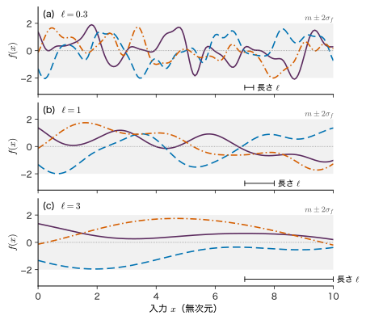
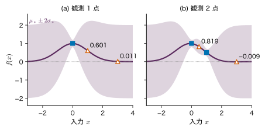
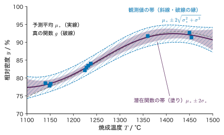
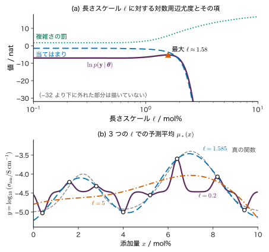
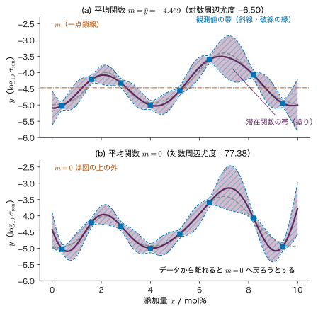

第12章ガウス過程回帰 — 関数に分布を置く
- 添加量を変えて 10 点だけイオン伝導度を測った．測っていない添加量での値を予測し，その予測に「どれだけ確かか」の幅を付けるにはどうするか．
- 予測の幅は，測った点の近くと遠くとでどう違うべきか．測った点のちょうど上でも，次に測る値の幅が 0 にならないのはなぜか．
- 曲線の「なめらかさ」を，データからどうやって選ぶか．
試料を 10 個作って特性を測ったとしよう．測った 10 点を通るなめらかな曲線を引けば，測っていない条件での値の見当はつく．しかし，その曲線は 1 本に決まらない．10 点を通る曲線は無数にあり，測った点の近くではどれもほぼ同じ値をとるが，点と点の間や測った範囲の外では大きく食い違う．食い違いの大きさこそが「その予測がどれだけ確かか」の目安になるはずである．本章のガウス過程回帰（Gaussian process regression）は，この考え方をそのまま式にする．あり得る曲線の全体に確率分布を置き，データと合わない曲線の確率を下げ，残った曲線の平均を予測値，ばらつきを不確かさとして出す．
第8章のベイズ線形回帰では，重み $\bm{w}$ に事前分布を置いて予測分布を求めた．本章では重みを経由せず，関数の値そのものに Gauss 分布を置く．必要な道具は第3章の多変量 Gauss 分布の条件付き分布の公式だけで，予測の平均と分散が閉じた式で求まる．後半では，曲線のなめらかさを決める長さスケールを周辺尤度で選ぶ方法，Cholesky 分解による安定な計算，第10章のカーネル Ridge 回帰との関係，計算量と適用限界を順に述べる．最後に教育用の合成データ C（添加量とイオン伝導度）に当てはめ，次章のベイズ最適化へつなぐ．
- ガウス過程を「有限個の入力での関数値が多変量 Gauss 分布に従う」ことで定義し，平均関数と共分散関数（カーネル）の役割を説明できる．
- ベイズ線形回帰の重みの事前分布から，関数値の共分散 $\sigma_w^{2}\bm{\phi}(\bm{x})^{\tp}\bm{\phi}(\bm{x}')$ が出ることを導ける．
- 観測と予測したい値の同時分布を書き，第3章の条件付き分布の公式から予測平均 $\mu_*$ と予測分散 $\sigma_*^{2}$ を導ける．観測 1〜2 点の場合を手で計算できる．
- 潜在関数 $f_*$ の分散 $\sigma_*^{2}$ と観測値 $y_*$ の分散 $\sigma_*^{2}+\sigma^{2}$ を区別して図に描ける．
- 対数周辺尤度の 3 つの項の意味を説明し，長さスケールを選ぶのに使える．
- Cholesky 分解で予測と周辺尤度を計算する手順を書け，ジッターや負の分散への対処を説明できる．
- カーネル Ridge 回帰との関係，計算量 $O(N^{3})$，外挿・高次元・定常性の仮定などの限界を説明できる．
入門ルートで読む節：この章は詳しいルートの章である．入門ルートでは 12.13（まとめ）だけを読み，次の第13章へ進んでよい（第13章の 13.1〜13.3 節は本章を読まなくても分かるように書いてある）．
12.1 関数に分布を置く詳しいルート
12.1.1 何をしたいのか
第8章のベイズ線形回帰は，モデル $f(\bm{x};\bm{w})=\bm{w}^{\tp}\bm{\phi}(\bm{x})$ の重み $\bm{w}$ に事前分布を置き，データで事後分布に更新し，予測分布を出した．重みが決まれば関数が決まるので，重みの分布は間接的に「関数の分布」を決めている．それなら，重みを経由せずに関数そのものに直接分布を置けないか．これが本章の出発点である．
ただし，関数 $f(x)$ は実数直線の上のすべての点で値をもつので，「無限個の数の組」である．無限次元のベクトルに確率密度を書くのは難しい．そこで発想を変える．実際の計算で使うのは，観測した $N$ 個の入力と予測したい少数の入力での値だけである．そこで「どの有限個の入力を選んでも，そこでの関数値の組は多変量 Gauss 分布に従う」という性質で関数の分布を決めてしまう（図12.1）．有限個なら第3章の多変量 Gauss 分布がそのまま使える．
12.1.2 定義と記号
記号：「Gauss 分布」と「ガウス過程」
本書では，分布・定理の名前は欧文の人名で書く（Gauss 分布，Bayes の定理）．ただし「ガウス過程（回帰）」「ベイズ推定」「ベイズ最適化」は分野でこの書き方が定着しているので，そのまま使う．したがって本章では「Gauss 分布」と「ガウス過程」が並ぶが，同じ人名に由来する同じ Gauss 分布の話である．英語では Gaussian process（GP）．
定義12.1 ガウス過程
入力 $\bm{x}\in\R^{D}$ の関数 $f(\bm{x})$ について，どんな有限個の入力 $\bm{x}_1,\dots,\bm{x}_N$（$N$ は任意の正の整数）を選んでも，関数値を並べたベクトル $\bm{f}=(f(\bm{x}_1),\dots,f(\bm{x}_N))^{\tp}\in\R^{N}$ が多変量 Gauss 分布に従うとき，$f$ をガウス過程という．その平均と共分散は，2 つの関数
- 平均関数 $m(\bm{x})=\Ex[f(\bm{x})]$（スカラー値）
- 共分散関数（カーネル）$k(\bm{x},\bm{x}')=\Cov[f(\bm{x}),f(\bm{x}')]$（スカラー値）
で決まり，$f\sim\GP(m,k)$ と書く．すなわち，$\bm{m}=(m(\bm{x}_1),\dots,m(\bm{x}_N))^{\tp}\in\R^{N}$，$K_{nm}=k(\bm{x}_n,\bm{x}_m)$ を成分とする Gram 行列 $\bm{K}\in\R^{N\times N}$ を使って
が，どの入力の組についても成り立つ．ここで確率は「入力 $\bm{x}_1,\dots,\bm{x}_N$ を与えたもとでの」$\bm{f}$ の分布であり，入力そのものは確率変数として扱わない（入力を条件に書くのは省略する）．
この定義が意味をもつためには，2 つの条件が要る．
- 共分散行列になれること：どの入力の組についても $\bm{K}$ が対称な半正定値行列でなければならない．これは第10章で述べた正定値カーネルの条件そのものである．任意の関数 $k$ を共分散関数に使えるわけではない．
- 食い違わないこと：入力の組 $\{\bm{x}_1,\bm{x}_2,\bm{x}_3\}$ での 3 次元の分布から $f(\bm{x}_3)$ を周辺化して得た 2 次元の分布は，最初から $\{\bm{x}_1,\bm{x}_2\}$ を選んで作った分布と一致しなければならない．多変量 Gauss 分布の周辺分布は平均と共分散の該当部分を取り出すだけ（第3章の定理3.5 (1)）なので，$\bm{m}$ と $\bm{K}$ を「関数 $m$，$k$ を入力に当てて作る」限り，この条件は自動的に満たされる．
つまり，ガウス過程を 1 つ決めることは，平均関数 $m$ と正定値のカーネル $k$ を 1 組決めることと同じである．
例題12.1 3 つの入力での関数値の同時分布
平均関数 $m(x)=0$，カーネル $k(x,x')=\exp\!\left[-(x-x')^{2}/2\right]$ のガウス過程を考える（12.2 節の RBF カーネルで $\sigma_f=1$，$\ell=1$ としたもの．$x$ は無次元）．(1) 入力 $x_1=0$，$x_2=1$，$x_3=3$ での $\bm{f}=(f(x_1),f(x_2),f(x_3))^{\tp}$ の分布を書け．(2) $f(x_1)$ と $f(x_2)$ の相関係数，$f(x_1)$ と $f(x_3)$ の相関係数を求めよ．(3) $f(x_1)$ と $f(x_2)$ が同じ符号になる確率を求めよ．2 次元 Gauss 分布で平均が 0，相関係数が $\rho$ のとき，この確率は $\tfrac12+\tfrac{1}{\pi}\arcsin\rho$ である（第3章の 2 次元 Gauss 分布で，楕円の傾きが同じ符号の象限の確率を増やす結果）．
解答 (1) 成分は $k(0,1)=e^{-1/2}=0.6065$，$k(0,3)=e^{-9/2}=0.0111$，$k(1,3)=e^{-2}=0.1353$，対角は $k(x,x)=1$ なので
$$ \bm{f}\sim\Normal\!\left(\bm{0},\ \begin{pmatrix}1&0.6065&0.0111\\0.6065&1&0.1353\\0.0111&0.1353&1\end{pmatrix}\right). $$この行列の固有値は $0.381,\ 0.995,\ 1.624$ ですべて正なので，確かに共分散行列になっている．
(2) 分散がどれも 1 なので，相関係数は共分散そのもので，$\rho_{12}=0.6065$，$\rho_{13}=0.0111$．距離 1 離れた値は強く連動し，距離 3 離れた値はほとんど無関係である．
(3) 次のようになる．
独立なら 0.5 のはずが，相関のために 0.707 になる．「近い入力では関数値が似る」という性質が，確率として表れている．
12.2 平均関数と共分散関数詳しいルート
12.2.1 RBF カーネル
本章では主に次の RBF カーネル（Gauss カーネル，二乗指数カーネルとも呼ぶ）を使う．第10章 10.5 節で導入したものと同じである．
\begin{equation} k(\bm{x},\bm{x}')=\sigma_f^{2}\exp\!\left(-\frac{\norm{\bm{x}-\bm{x}'}^{2}}{2\ell^{2}}\right) \label{eq:12-rbf} \end{equation}パラメーターは 2 つある．
- 信号分散 $\sigma_f^{2}$（$\sigma_f\gt0$ は信号の標準偏差）：$\bm{x}=\bm{x}'$ とおくと $k(\bm{x},\bm{x})=\sigma_f^{2}=\Var[f(\bm{x})]$．関数値が平均関数のまわりにどれくらいの幅で振れるかを決める．単位は $f$ の単位と同じ（$\sigma_f^{2}$ はその 2 乗）．
- 長さスケール $\ell\gt0$：入力がどれくらい離れると関数値の相関が弱まるかを決める．単位は入力 $\bm{x}$ の単位と同じ（データ C なら mol%）．
相関係数で見ると意味がはっきりする．距離 $r=\norm{\bm{x}-\bm{x}'}$ の 2 点の関数値の相関係数は
$$ \rho(r)=\frac{k(\bm{x},\bm{x}')}{\sqrt{k(\bm{x},\bm{x})\,k(\bm{x}',\bm{x}')}}=\exp\!\left(-\frac{r^{2}}{2\ell^{2}}\right) $$で，$\sigma_f$ によらない．$r=\ell$ で $e^{-1/2}=0.61$，$r=2\ell$ で $e^{-2}=0.14$，$r=3\ell$ で $e^{-4.5}=0.011$ である．大まかに言えば，$\ell$ は「関数がだいたい別の値になるまでの入力の距離」である．
平均関数 $m(\bm{x})$ は，データを見る前の「関数のだいたいの高さ」である．本章では定数 $m$ を使う（$m(\bm{x})=m$ がすべての $\bm{x}$ で同じ）．データ C のように値が $-5$ 付近にある量で $m=0$ とすると，データから離れた所で予測が 0 へ引き戻されて不自然になる（12.4 節と 12.11 節）．実用上は，観測値の平均 $\bar{y}$ を $m$ に使うか，$y$ を標準化（平均を引いて標準偏差で割る）してから $m=0$ のガウス過程を当てはめることが多い．
12.2.2 事前分布から関数を引く
ガウス過程は関数の確率分布なので，「事前分布からの標本」として関数を引いて眺めることができる．やり方は次のとおり．
- 入力の細かい格子 $x^{(1)},\dots,x^{(G)}$（$G$ 個）をとる．
- 格子の上の Gram 行列 $\bm{K}\in\R^{G\times G}$ を作り，Cholesky 分解 $\bm{K}=\bm{L}\bm{L}^{\tp}$ する（$\bm{L}$ は下三角行列．12.8 節）．
- 標準 Gauss 乱数のベクトル $\bm{z}\sim\Normal(\bm{0},\bm{I}_G)$ を引き，$\bm{f}=m\bm{1}+\bm{L}\bm{z}$ とする．
第3章の定理3.4（線形変換しても Gauss 分布）から $\Cov[\bm{f}]=\bm{L}\,\bm{I}\,\bm{L}^{\tp}=\bm{K}$ なので，$\bm{f}$ は $\Normal(m\bm{1},\bm{K})$ に従う．格子が細かいと $\bm{K}$ の隣り合う行がほとんど同じになり，数値的に特異に近づく．そのときは対角に $10^{-8}$ 程度の小さな値（ジッター）を足してから分解する（12.8 節）．

default_rng(20261112)，格子 161 点，ジッター $10^{-8}$）を使い，$\ell$ だけを変えた．灰色の帯は $m\pm2\sigma_f$，右下の横棒は長さ $\ell$ を示す．図12.2から，$\ell$ は関数の「波の細かさ」を，$\sigma_f$ は「振れ幅」を決めることが分かる．$\ell=0.3$ では入力が 1 動く間に何度も上下し，$\ell=3$ では区間 $[0,10]$ 全体でも 2〜3 回しか曲がらない．どの $\ell$ でも，各点での値はおよそ $\pm2\sigma_f$ の帯に収まる（各点で $\Normal(0,\sigma_f^{2})$ に従うので，帯の中に入る確率は約 95%）．RBF カーネルの標本は何回でも微分できる非常になめらかな関数になる．折れ曲がりのある関数を表したいときは，第10章 10.5 節の Matérn カーネルのような，なめらかさを調節できるカーネルを使う．
例題12.2 長さスケールを読む
RBF カーネル \eqref{eq:12-rbf} で，(1) 2 点の関数値の相関係数が 0.5 になる距離 $r$ を $\ell$ で表せ．(2) データ C の設定（$\ell=1\ \mathrm{mol\%}$，$\sigma_f=0.8$）で，添加量 6.4 mol% と 7.0 mol% の関数値の相関係数，6.4 mol% と 8.2 mol% の相関係数を求めよ．(3) (2) のそれぞれについて，差 $f(x)-f(x')$ の標準偏差を求めよ．
解答 (1) $\exp(-r^{2}/2\ell^{2})=1/2$ の両辺の対数をとると $r^{2}/(2\ell^{2})=\ln 2$，ゆえに $r=\ell\sqrt{2\ln2}=1.177\,\ell$．
(2) 距離 0.6 mol% では $\rho=\exp(-0.6^{2}/2)=e^{-0.18}=0.835$，距離 1.8 mol% では $\rho=\exp(-1.8^{2}/2)=e^{-1.62}=0.198$．
(3) 第2章の分散の公式から
距離 0.6 では $\sqrt{2\times0.64\times(1-0.835)}=\sqrt{0.211}=0.459$，距離 1.8 では $\sqrt{2\times0.64\times(1-0.198)}=\sqrt{1.026}=1.013$．事前分布の段階で，「0.6 mol% 離れた 2 点の $\log_{10}\sigma_{\mathrm{ion}}$ の差はだいたい $\pm0.5$ 以内」と仮定していることになる．
12.3 ベイズ線形回帰からガウス過程へ詳しいルート
12.3.1 重みの分布が関数値の分布を作る
第8章 8.9 節で予告した関係を，ここで導く．基底関数 $\bm{\phi}(\bm{x})\in\R^{M}$ を使う線形モデル $f(\bm{x})=\bm{w}^{\tp}\bm{\phi}(\bm{x})$ の重みに，第8章と同じ事前分布 $p(\bm{w})=\Normal(\bm{w}\mid\bm{0},\sigma_w^{2}\bm{I}_M)$ を置く．入力 $\bm{x}_1,\dots,\bm{x}_N$ での関数値を並べると，計画行列 $\bm{\Phi}\in\R^{N\times M}$（$\Phi_{nj}=\phi_j(\bm{x}_n)$）を使って
$$ \bm{f}=(f(\bm{x}_1),\dots,f(\bm{x}_N))^{\tp}=\bm{\Phi}\bm{w}\in\R^{N} $$と書ける．$\bm{f}$ は Gauss 分布に従う $\bm{w}$ の線形変換なので，第3章の定理3.4 によって Gauss 分布に従う．平均と共分散を 1 行ずつ計算する．
\begin{align} \Ex[\bm{f}]&=\bm{\Phi}\,\Ex[\bm{w}]=\bm{0}, \notag\\ \Cov[\bm{f}]&=\Ex[\bm{\Phi}\bm{w}\bm{w}^{\tp}\bm{\Phi}^{\tp}] \notag\\ &=\bm{\Phi}\,\Ex[\bm{w}\bm{w}^{\tp}]\,\bm{\Phi}^{\tp} \notag\\ &=\sigma_w^{2}\bm{\Phi}\bm{\Phi}^{\tp}. \label{eq:12-blr-cov} \end{align}成分で書けば $\Cov[f(\bm{x}_n),f(\bm{x}_m)]=\sigma_w^{2}\bm{\phi}(\bm{x}_n)^{\tp}\bm{\phi}(\bm{x}_m)$ である．入力の組を何に選んでも同じ形なので，ベイズ線形回帰の事前分布は，平均関数 0，カーネル $k(\bm{x},\bm{x}')=\sigma_w^{2}\bm{\phi}(\bm{x})^{\tp}\bm{\phi}(\bm{x}')$ のガウス過程である．
この見方を関数空間の見方，重みの分布から出発する見方を重み空間の見方と呼ぶ．同じモデルを 2 通りに見ているだけだが，計算の大きさが違う．重み空間では $M\times M$ の行列（第8章の $\bm{S}_N$）を扱い，関数空間では $N\times N$ の行列 $\bm{K}$ を扱う．基底の数 $M$ がデータ数 $N$ より大きいとき，特に $M$ が無限大のときは，関数空間の方が扱いやすい．
例題12.3 直線のモデルが作る Gram 行列
基底 $\bm{\phi}(x)=(1,x)^{\tp}$（$M=2$．切片と傾き），$\sigma_w^{2}=1$ とする．(1) カーネル $k(x,x')$ を求めよ．(2) 入力 $x=-1,0,1$ での Gram 行列 $\bm{K}\in\R^{3\times3}$ を書き，行列式を求めよ．(3) その結果は関数値について何を意味するか．
解答 (1) $k(x,x')=\bm{\phi}(x)^{\tp}\bm{\phi}(x')$ $=1\cdot1+x\,x'=1+xx'$．
(2) $K_{nm}=1+x_nx_m$ から
第 1 行で余因子展開すると
$$ \begin{aligned} \det\bm{K}&=2(1\cdot2-1\cdot1)-1(1\cdot2-1\cdot0)\\ &=2-2=0 . \end{aligned} $$固有値は $0,\,2,\,3$ である．
(3) 行列式が 0 なので，3 つの関数値の分布は 3 次元の空間全体には広がらず，2 次元の平面の上に乗っている．固有値 0 の固有ベクトルは $(1,-2,1)^{\tp}/\sqrt6$ で，$\Var[f(-1)-2f(0)+f(1)]=0$，つまり $f(0)=\{f(-1)+f(1)\}/2$ が確率 1 で成り立つ．直線なら中点の値は両端の平均に決まるので当然である．基底が $M$ 個しかないと，$N\gt M$ 個の点での $\bm{K}$ は必ず特異になる（階数は $M$ 以下）．RBF カーネルの $\bm{K}$ が（入力が互いに異なれば）正則になるのは，それが無限個の基底に当たるからである（次の囲み）．
導出：Gauss 基底を無限に並べると RBF カーネルになる
1 次元の入力で，中心 $c$ の Gauss 基底 $\phi_c(x)=\exp\!\left[-(x-c)^{2}/(2s^{2})\right]$（幅 $s$）を，中心 $c$ を連続に並べて重ね合わせる．第8章の和 $\sum_j w_j\phi_j(x)$ を，中心の間隔を $\Delta c$ として $\sum_j w_j\phi_{c_j}(x)$ と書き，重みの事前分散を $\sigma_w^{2}=\tau^{2}\Delta c$（中心の密度に比例させる）とすると，式 \eqref{eq:12-blr-cov} のカーネルは
$$ \begin{aligned} k(x,x')&=\tau^{2}\sum_j\phi_{c_j}(x)\phi_{c_j}(x')\,\Delta c\\ &\xrightarrow{\ \Delta c\to0\ }\ \tau^{2}\int_{-\infty}^{\infty}\phi_c(x)\phi_c(x')\,\dd c \end{aligned} $$となる．指数の中身を $c$ について平方完成する．
$$ \begin{aligned} &(x-c)^{2}+(x'-c)^{2}\\ &=2c^{2}-2(x+x')c+x^{2}+x'^{2}\\ &=2\Bigl(c-\tfrac{x+x'}{2}\Bigr)^{2}+\tfrac{(x-x')^{2}}{2}. \end{aligned} $$最後の行は，$2\bigl(\tfrac{x+x'}{2}\bigr)^{2}=\tfrac{(x+x')^{2}}{2}$ を引いて $x^{2}+x'^{2}-\tfrac{(x+x')^{2}}{2}=\tfrac{(x-x')^{2}}{2}$ となることを使った．これを $2s^{2}$ で割って指数に入れると
$$ \begin{aligned} k(x,x')&=\tau^{2}e^{-(x-x')^{2}/(4s^{2})}\\ &\quad\times\int_{-\infty}^{\infty}e^{-(c-\bar{c})^{2}/s^{2}}\,\dd c\\ &=\tau^{2}\sqrt{\pi}\,s\,\exp\!\left[-\frac{(x-x')^{2}}{4s^{2}}\right] \end{aligned} $$（$\bar{c}=(x+x')/2$．Gauss 積分 $\int e^{-u^{2}/s^{2}}\dd u=\sqrt{\pi}\,s$ を使った）．これは $\sigma_f^{2}=\tau^{2}\sqrt{\pi}\,s$，$\ell=\sqrt2\,s$ とおいた RBF カーネル \eqref{eq:12-rbf} である．つまり RBF カーネルのガウス過程は，無限個の Gauss 基底をもつベイズ線形回帰と同じものであり，重み空間では扱えない（無限次元の行列になる）モデルを，関数空間では $N\times N$ の行列で扱える．第10章 10.5 節では，同じ RBF カーネルを Taylor 展開して無限次元の特徴写像を示した．こちらは基底を連続に並べる別の見方である．
（導出終わり）
12.4 予測分布の導出詳しいルート
12.4.1 設定
データ $\data=\{(\bm{x}_n,y_n)\}_{n=1}^{N}$ が与えられ，新しい入力 $\bm{x}_*$（テスト入力）での値を予測したい．次を仮定する．
- 潜在関数（ノイズのない真の関数）は $f\sim\GP(m,k)$．平均関数は定数 $m$．
- 観測はノイズを含む：$y_n=f(\bm{x}_n)+\varepsilon_n$，$\varepsilon_n\sim\Normal(0,\sigma^{2})$．ノイズは互いに独立で，$f$ とも独立．$\sigma^{2}$ は観測ノイズの分散（全章共通の記号）．
記号をまとめる．$\bm{y}=(y_1,\dots,y_N)^{\tp}\in\R^{N}$，$\bm{f}=(f(\bm{x}_1),\dots,f(\bm{x}_N))^{\tp}\in\R^{N}$，$f_*=f(\bm{x}_*)$（スカラー），$\bm{K}\in\R^{N\times N}$（$K_{nm}=k(\bm{x}_n,\bm{x}_m)$），$\bm{k}_*=(k(\bm{x}_1,\bm{x}_*),\dots,k(\bm{x}_N,\bm{x}_*))^{\tp}\in\R^{N}$，$k_{**}=k(\bm{x}_*,\bm{x}_*)$（スカラー），$\bm{1}=(1,\dots,1)^{\tp}\in\R^{N}$．そして
\begin{equation} \bm{K}_y\equiv\bm{K}+\sigma^{2}\bm{I}\in\R^{N\times N} \label{eq:12-Ky} \end{equation}とおく．$\bm{K}$ は半正定値，$\sigma^{2}\bm{I}$ は $\sigma\gt0$ なら正定値なので，$\bm{K}_y$ は正定値で逆行列をもつ．
12.4.2 まずノイズのない場合
観測にノイズがない（$\sigma=0$，$\bm{y}=\bm{f}$）場合から始める．定義12.1 を入力の組 $\{\bm{x}_1,\dots,\bm{x}_N,\bm{x}_*\}$ に当てはめると，$N+1$ 個の関数値の同時分布は
\begin{equation} \begin{aligned} &\begin{pmatrix}\bm{f}\\ f_*\end{pmatrix}\sim\Normal\!\left(\begin{pmatrix}m\bm{1}\\ m\end{pmatrix},\ \bm{C}\right),\\ &\bm{C}=\begin{pmatrix}\bm{K}&\bm{k}_*\\ \bm{k}_*^{\tp}&k_{**}\end{pmatrix} \end{aligned} \label{eq:12-joint-free} \end{equation}である．共分散行列 $\bm{C}\in\R^{(N+1)\times(N+1)}$ の右上のブロック $\bm{k}_*$ は「観測した点の値と予測したい点の値の共分散」，右下の $k_{**}$ は予測したい点の値の事前分散である．
知りたいのは，$\bm{f}$ を観測したもとでの $f_*$ の分布 $p(f_*\mid\bm{f})$ である．第3章の定理3.5（条件付き分布）で，$\bm{x}_a=f_*$（予測したい値），$\bm{x}_b=\bm{f}$（観測した値）とおき，対応を
$$ \begin{aligned} &\bm{\mu}_a=m,\quad \bm{\mu}_b=m\bm{1},\quad \bm{\Sigma}_{aa}=k_{**},\\ &\bm{\Sigma}_{ab}=\bm{k}_*^{\tp},\quad \bm{\Sigma}_{bb}=\bm{K} \end{aligned} $$ととると，第3章の定理3.5 の条件付き平均と条件付き共分散の式（下の囲みに再掲）から
$$ \begin{aligned} \Ex[f_*\mid\bm{f}]&=m+\bm{k}_*^{\tp}\bm{K}^{-1}(\bm{f}-m\bm{1}),\\ \Var[f_*\mid\bm{f}]&=k_{**}-\bm{k}_*^{\tp}\bm{K}^{-1}\bm{k}_* \end{aligned} $$を得る（ここでは $\bm{K}$ が正則であるとした）．この形には大事な性質がある．テスト入力が観測した入力の 1 つ $\bm{x}_*=\bm{x}_n$ に一致すると，$\bm{k}_*$ は $\bm{K}$ の第 $n$ 列 $\bm{K}\bm{e}_n$（$\bm{e}_n$ は第 $n$ 成分だけが 1 の単位ベクトル）になるので
$$ \begin{aligned} \Ex[f_*\mid\bm{f}]&=m+\bm{e}_n^{\tp}\bm{K}\bm{K}^{-1}(\bm{f}-m\bm{1})\\ &=f_n,\\ \Var[f_*\mid\bm{f}]&=K_{nn}-\bm{e}_n^{\tp}\bm{K}\bm{K}^{-1}\bm{K}\bm{e}_n\\ &=K_{nn}-K_{nn}=0. \end{aligned} $$ノイズがなければ，予測平均は観測点をちょうど通り（補間），そこでの不確かさは 0 になる．
記号：第3章の条件付き分布の公式
上で使った第3章の式は，定理3.5 の直後にある条件付き平均 $\bm{\mu}_{a\mid b}=\bm{\mu}_a+\bm{\Sigma}_{ab}\bm{\Sigma}_{bb}^{-1}(\bm{x}_b-\bm{\mu}_b)$ と条件付き共分散 $\bm{\Sigma}_{a\mid b}=\bm{\Sigma}_{aa}-\bm{\Sigma}_{ab}\bm{\Sigma}_{bb}^{-1}\bm{\Sigma}_{ba}$ の 2 式である（第3章 3.6 節）．本章ではこれを「条件付き分布の公式」と呼ぶ．
12.4.3 ノイズのある場合
実際の観測はノイズを含む．観測値のベクトルは $\bm{y}=\bm{f}+\bm{\varepsilon}$，$\bm{\varepsilon}=(\varepsilon_1,\dots,\varepsilon_N)^{\tp}\sim\Normal(\bm{0},\sigma^{2}\bm{I})$ である．$(\bm{y},f_*)$ は Gauss 分布に従う $(\bm{f},f_*,\bm{\varepsilon})$ の線形変換なので，やはり Gauss 分布に従う（第3章の定理3.4）．平均と共分散を成分ごとに計算する．$\varepsilon_n$ は $f$ と独立で平均 0 なので，$\varepsilon_n$ と $f$ の値との共分散は 0 である．
- 平均：$\Ex[y_n]=\Ex[f(\bm{x}_n)]+\Ex[\varepsilon_n]=m+0=m$．
- 観測値どうし：$\Cov[y_n,y_{n'}]=\Cov[f_n+\varepsilon_n,\ f_{n'}+\varepsilon_{n'}]$ を共分散の双線形性で 4 項に分けると $$ \begin{aligned} &\Cov[f_n,f_{n'}]+\Cov[f_n,\varepsilon_{n'}]\\ &\quad+\Cov[\varepsilon_n,f_{n'}]+\Cov[\varepsilon_n,\varepsilon_{n'}]\\ &=K_{nn'}+0+0+\sigma^{2}\delta_{nn'} \end{aligned} $$ （$\delta_{nn'}$ は $n=n'$ で 1，それ以外で 0）．行列で書けば $\Cov[\bm{y}]=\bm{K}+\sigma^{2}\bm{I}=\bm{K}_y$．
- 観測値と予測したい値：$\Cov[y_n,f_*]=\Cov[f_n,f_*]+\Cov[\varepsilon_n,f_*]$ $=k(\bm{x}_n,\bm{x}_*)+0$．行列で書けば $\Cov[\bm{y},f_*]=\bm{k}_*$．
- 予測したい値：$\Var[f_*]=k_{**}$．
以上をまとめると，同時分布は
\begin{equation} \begin{aligned} &\begin{pmatrix}\bm{y}\\ f_*\end{pmatrix}\sim\Normal\!\left(\begin{pmatrix}m\bm{1}\\ m\end{pmatrix},\ \bm{C}\right),\\ &\bm{C}=\begin{pmatrix}\bm{K}_y&\bm{k}_*\\ \bm{k}_*^{\tp}&k_{**}\end{pmatrix} \end{aligned} \label{eq:12-joint} \end{equation}である．ノイズのない場合の式 \eqref{eq:12-joint-free} と比べると，左上のブロックの $\bm{K}$ が $\bm{K}_y=\bm{K}+\sigma^{2}\bm{I}$ に替わるだけで，$\bm{k}_*$ と $k_{**}$ は変わらない．ノイズは観測値どうしの分散だけを増やし，予測したい潜在関数の値との共分散には入らないからである．
条件付き分布の公式を同じ対応（$\bm{\Sigma}_{bb}=\bm{K}_y$ に替える）で当てはめると，次の結果を得る．
公式12.1 ガウス過程回帰の予測分布
上の設定のもとで，データ $\data$ を条件とした潜在関数の値 $f_*=f(\bm{x}_*)$ の分布は Gauss 分布 $p(f_*\mid\data,\bm{x}_*)=\Normal(f_*\mid\mu_*,\sigma_*^{2})$ で，平均 $\mu_*$ と分散 $\sigma_*^{2}$ は式 \eqref{eq:12-post-mean}，\eqref{eq:12-post-var} で与えられる．次に測る観測値 $y_*=f_*+\varepsilon_*$ の分布は $\Normal(y_*\mid\mu_*,\ \sigma_*^{2}+\sigma^{2})$ である（式 \eqref{eq:12-pred-y}）．
$\mu_*$，$\sigma_*^{2}$ はテスト入力 $\bm{x}_*$ の関数なので，$\mu_*(\bm{x}_*)$，$\sigma_*^{2}(\bm{x}_*)$ とも書く．平均関数を 0 にとれば（$m=0$），$\mu_*=\bm{k}_*^{\tp}\bm{K}_y^{-1}\bm{y}$ となる．これが多くの本に載っている形である．式 \eqref{eq:12-pred-y} は，$f_*$ と新しいノイズ $\varepsilon_*$（データと独立）の和の分散が，分散の和になることから出る（第2章の定理2.6）．
12.4.4 式の読み方
- 予測平均は「カーネルの重ね合わせ」：$\bm{a}\equiv\bm{K}_y^{-1}(\bm{y}-m\bm{1})\in\R^{N}$ とおくと，$\mu_*(\bm{x}_*)=m+\sum_{n=1}^{N}a_n\,k(\bm{x}_n,\bm{x}_*)$．観測点を中心とするカーネル（RBF なら山形）を重み $a_n$ で足し合わせた形で，第10章のカーネル Ridge 回帰と同じ形である（12.9 節）．係数ベクトルに第10章と同じ文字 $\bm{a}$ を使う．第11章の SVM の双対変数 $\alpha_n$ とは別の量である．
- 予測分散はデータの値 $\bm{y}$ によらない：式 \eqref{eq:12-post-var} には $\bm{y}$ が入っていない．どこを測ったか（入力の配置）とカーネルだけで決まる．これは条件付き分布の共分散が条件の値によらないという Gauss 分布の性質（第3章 3.6 節）から来ている．
- 分散は事前分散から減るだけ：$\bm{K}_y^{-1}$ は正定値なので $\bm{k}_*^{\tp}\bm{K}_y^{-1}\bm{k}_*\ge0$，ゆえに $\sigma_*^{2}\le k_{**}=\sigma_f^{2}$．観測点から遠い所では $\bm{k}_*\approx\bm{0}$ となり，$\mu_*\to m$，$\sigma_*^{2}\to\sigma_f^{2}$ と事前分布へ戻る．
- 平均関数 $m$ の意味：データから離れると予測は $m$ に戻る．$m=0$ のまま $-5$ 付近の値のデータに当てはめると，データの間や外で予測が 0 の方へ引っ張られる．12.11 節の図12.6(b) にその例がある．
複数のテスト入力 $\bm{x}_{*1},\dots,\bm{x}_{*G}$ をまとめて予測するときは，$\bm{K}_*\in\R^{N\times G}$（$(\bm{K}_*)_{ng}=k(\bm{x}_n,\bm{x}_{*g})$），$\bm{K}_{**}\in\R^{G\times G}$ として，予測値のベクトルは平均 $m\bm{1}_G+\bm{K}_*^{\tp}\bm{K}_y^{-1}(\bm{y}-m\bm{1})$，共分散行列 $\bm{K}_{**}-\bm{K}_*^{\tp}\bm{K}_y^{-1}\bm{K}_*$ の多変量 Gauss 分布に従う．この共分散行列を使えば，12.2.2 項と同じ方法で事後分布からの関数の標本を引ける．
例題12.4 ノイズのない観測 1 点からの予測と平均関数の役割
RBF カーネル（$\sigma_f=0.8$，$\ell=1\ \mathrm{mol\%}$）のガウス過程で，添加量 $x_1=7.0\ \mathrm{mol\%}$ の値 $f(x_1)=-3.40$ をノイズなしで知ったとする（教育用の数値）．(1) 平均関数 $m=-4.47$ のとき，$x_*=7.5$ と $x_*=9.0$ での予測平均と予測の標準偏差を求めよ．(2) $m=0$ にすると予測平均はどうなるか．
解答 観測が 1 点なので $\bm{K}=k(x_1,x_1)=\sigma_f^{2}=0.64$（$1\times1$），$\bm{k}_*=k(x_1,x_*)$ である．ノイズのない場合の式から
$$ \begin{aligned} \mu_*&=m+\frac{k(x_1,x_*)}{\sigma_f^{2}}\,(f(x_1)-m),\\ \sigma_*^{2}&=\sigma_f^{2}-\frac{k(x_1,x_*)^{2}}{\sigma_f^{2}}. \end{aligned} $$(1) $x_*=7.5$：$k=0.64\,e^{-0.25/2}=0.64\times0.8825=0.5648$．
$$ \begin{aligned} \mu_*&=-4.47+0.8825\times(-3.40+4.47)\\ &=-4.47+0.9443=-3.526,\\ \sigma_*^{2}&=0.64-0.5648^{2}/0.64\\ &=0.64-0.4984=0.1416 . \end{aligned} $$$\sigma_*=0.376$．
$x_*=9.0$：$k=0.64\,e^{-4/2}=0.64\times0.1353=0.0866$．$\mu_*=-4.47+0.1353\times1.07=-4.325$，$\sigma_*^{2}=0.64-0.0866^{2}/0.64=0.6283$，$\sigma_*=0.793$（事前の $\sigma_f=0.8$ にほぼ戻る）．
(2) $m=0$ では $\mu_*=0.8825\times(-3.40)=-3.000$（$x_*=7.5$），$0.1353\times(-3.40)=-0.460$（$x_*=9.0$）となる．観測から 2 mol% 離れただけで，予測が $\log_{10}\sigma_{\mathrm{ion}}=-0.46$ という，データの範囲（$-5$ 付近）とかけ離れた値になる．平均関数は「データから離れた所で何を予測するか」を決めるので，適当に 0 にしてはいけない．
12.5 手計算 — 観測 1 点と 2 点詳しいルート
公式12.1 を，行列が $1\times1$ と $2\times2$ で済む場合に手で計算し，式の各部分が何をしているかを確かめる．この節の例では入力 $x$ と出力を無次元の数とし，RBF カーネルの $\sigma_f=1$，$\ell=1$，観測ノイズの標準偏差 $\sigma=0.1$（$\sigma^{2}=0.01$），平均関数 $m=0$ とする．
12.5.1 観測 1 点
観測が $(x_1,y_1)$ の 1 点だけなら，$\bm{K}_y=\sigma_f^{2}+\sigma^{2}$（スカラー），$\bm{k}_*=k(x_1,x_*)$ なので，式 \eqref{eq:12-post-mean}，\eqref{eq:12-post-var} は
\begin{align} \mu_*(x_*)&=\frac{k(x_1,x_*)}{\sigma_f^{2}+\sigma^{2}}\,y_1, \label{eq:12-one-mean}\\ \sigma_*^{2}(x_*)&=\sigma_f^{2}-\frac{k(x_1,x_*)^{2}}{\sigma_f^{2}+\sigma^{2}} \label{eq:12-one-var} \end{align}となる．RBF カーネルでは $k(x_1,x_*)=\sigma_f^{2}e^{-(x_*-x_1)^{2}/(2\ell^{2})}$ なので，予測平均は観測点を中心とする山形のカーネルを $y_1/(\sigma_f^{2}+\sigma^{2})$ 倍したもの，予測分散は観測点で最も小さく，離れるにつれて $\sigma_f^{2}$ へ戻る形になる．
例題12.5 観測 1 点からの予測
観測 $(x_1,y_1)=(0,\,1)$ が 1 点ある．上の設定（$\sigma_f=1$，$\ell=1$，$\sigma=0.1$，$m=0$）で，$x_*=0,\ 1,\ 2,\ 3$ での $\mu_*$，$\sigma_*$ を求めよ．また $x_*=0$ での観測値 $y_*$ の予測の標準偏差 $\sqrt{\sigma_*^{2}+\sigma^{2}}$ を求めよ．
解答 $\sigma_f^{2}+\sigma^{2}=1.01$，$k(0,x_*)=e^{-x_*^{2}/2}$ を式 \eqref{eq:12-one-mean}，\eqref{eq:12-one-var} に入れる．
- $x_*=0$：$k=1$．$\mu_*=1/1.01=0.990$，$\sigma_*^{2}=1-1/1.01=0.0099$，$\sigma_*=0.0995$．
- $x_*=1$：$k=e^{-0.5}=0.6065$．$\mu_*=0.6065/1.01=0.601$，$\sigma_*^{2}=1-0.3679/1.01=0.6358$，$\sigma_*=0.797$．
- $x_*=2$：$k=e^{-2}=0.1353$．$\mu_*=0.134$，$\sigma_*^{2}=1-0.01832/1.01=0.9819$，$\sigma_*=0.991$．
- $x_*=3$：$k=e^{-4.5}=0.0111$．$\mu_*=0.0110$，$\sigma_*=0.99994$．
観測点の上でも予測平均は $y_1=1$ ちょうどではなく $0.990$ である．観測値にノイズがあることを知っているので，事前平均 0 の方へ少し引き戻す（縮小）．引き戻しの割合 $\sigma^{2}/(\sigma_f^{2}+\sigma^{2})$ は，第4章 4.6 節の「Gauss 分布の平均のベイズ推定」でデータの重みが 1 未満になったのと同じ仕組みである．$x_*=0$ での観測値の予測の標準偏差は $\sqrt{0.0099+0.01}=\sqrt{0.0199}=0.141$ で，潜在関数の $\sigma_*=0.0995$ より大きく，ノイズの $\sigma=0.1$ よりも大きい．
12.5.2 観測 2 点
観測が 2 点になると，$\bm{K}_y$ は $2\times2$ 行列になり，その逆行列が「2 つの観測の情報をどう組み合わせるか」を決める．$2\times2$ の対称行列の逆行列は
$$ \begin{pmatrix}p&q\\q&p\end{pmatrix}^{-1}=\frac{1}{p^{2}-q^{2}}\begin{pmatrix}p&-q\\-q&p\end{pmatrix} $$である（大学数学 第9章 9.1 節の余因子行列による公式で，対角成分が等しい場合）．
例題12.6 観測 2 点からの予測
観測 $(x_1,y_1)=(0,\,1)$，$(x_2,y_2)=(1,\,0.5)$ がある．同じ設定で，(1) $\bm{K}_y$ とその逆行列，(2) $\bm{a}=\bm{K}_y^{-1}\bm{y}$，(3) $x_*=0.5$ での $\mu_*$，$\sigma_*$，(4) $x_*=3$ での $\mu_*$，$\sigma_*$ を求めよ．
解答 (1) $k(0,1)=e^{-1/2}=0.6065$ なので $p=1.01$，$q=0.6065$ で
$$ \bm{K}_y=\begin{pmatrix}1.01&0.6065\\0.6065&1.01\end{pmatrix}. $$行列式は $p^{2}-q^{2}=1.0201-0.3679=0.6522$ なので，逆行列は
$$ \begin{aligned} \bm{K}_y^{-1}&=\frac{1}{0.6522}\begin{pmatrix}1.01&-0.6065\\-0.6065&1.01\end{pmatrix}\\ &=\begin{pmatrix}1.5486&-0.9299\\-0.9299&1.5486\end{pmatrix}. \end{aligned} $$(2) $\bm{a}=\bm{K}_y^{-1}\bm{y}$ の第 1 成分は $1.5486\times1-0.9299\times0.5=1.0836$，第 2 成分は $-0.9299\times1+1.5486\times0.5=-0.1557$．
(3) $x_*=0.5$ は両方の観測点から距離 0.5 なので $\bm{k}_*=(e^{-1/8},e^{-1/8})^{\tp}=(0.8825,\,0.8825)^{\tp}$．
(4) $x_*=3$：$\bm{k}_*=(e^{-4.5},e^{-2})^{\tp}=(0.0111,\,0.1353)^{\tp}$．
$$ \begin{aligned} \mu_*&=0.0111\times1.0836\\ &\quad+0.1353\times(-0.1557)\\ &=0.0120-0.0211=-0.009,\\ &\bm{k}_*^{\tp}\bm{K}_y^{-1}\bm{k}_*\\ &=1.5486\,(0.0111^{2}+0.1353^{2})\\ &\quad-2\times0.9299\times0.0111\times0.1353\\ &=0.0287-0.0028=0.0258 \end{aligned} $$なので $\sigma_*^{2}=0.974$，$\sigma_*=0.987$．
(2) で $a_2$ が負になったことに注意する．2 つの観測点は近い（相関 0.61）ので，$x_2$ のカーネルの山を正の重みで足すと $x_1$ 付近の予測が上がりすぎる．それを打ち消すために $a_2$ は負になる．$\bm{a}$ は「観測値そのもの」ではなく，観測どうしの相関を差し引いた重みである．

12.6 観測ノイズと予測の不確かさ — 2 種類の帯詳しいルート
12.6.1 潜在関数の帯と観測値の帯
公式12.1 には 2 つの分散が出てきた．
- 潜在関数 $f_*$ の分散 $\sigma_*^{2}$：ノイズのない「真の特性」$f(\bm{x}_*)$ について，どれだけ分かっていないか．データを増やせば（特に $\bm{x}_*$ の近くを測れば）小さくなる．第4章 4.8 節の言葉では認識的不確かさ（知識不足に由来する不確かさ）に当たる．
- 観測値 $y_*$ の分散 $\sigma_*^{2}+\sigma^{2}$：$\bm{x}_*$ でもう 1 回測ったら，どんな値が出るか．認識的不確かさに，測定のたびに入るノイズ（偶然的不確かさ）$\sigma^{2}$ が加わる．データをいくら増やしても $\sigma^{2}$ より小さくならない．
図に帯を描くときは，どちらの帯かを必ず書く．本書では，潜在関数の帯 $\mu_*\pm2\sigma_*$ を塗りで，観測値の帯 $\mu_*\pm2\sqrt{\sigma_*^{2}+\sigma^{2}}$ を斜線と破線の縁で描く（図12.4）．Gauss 分布では平均 $\pm2$ 標準偏差の範囲に約 95% の確率が入るので，塗りの帯は「真の特性がこの中にある確率が約 95%」，斜線の帯は「次の測定値がこの中に入る確率が約 95%」を表す（どちらも，モデルの仮定が正しければの話である．12.12 節）．

default_rng(20261112) で sample_A(10, rng)，ノイズの標準偏差 1.0 %）へのガウス過程回帰．RBF カーネルを規格化した温度 $s=(T-1300\ ^{\circ}\mathrm{C})/200\ ^{\circ}\mathrm{C}$ の上に置き，$\sigma=1.0$ % を既知として，$\ell=0.80$（温度で 160 °C），$\sigma_f=6.5$ % を対数周辺尤度の最大（12.7 節）で選んだ．$m=\bar{y}=84.3$ %．塗りは潜在関数の帯 $\mu_*\pm2\sigma_*$，斜線と破線の縁は観測値の帯 $\mu_*\pm2\sqrt{\sigma_*^{2}+\sigma^{2}}$，□ は観測値，灰色の破線は真の関数 $g$．図12.4で，観測点の密集した 1150 °C 付近や 1230 °C 付近では塗りの帯（$2\sigma_*\approx1$ % 前後）がかなり細いのに，斜線の帯はそれよりひと回り太い．観測値の帯の半幅 $2\sqrt{\sigma_*^{2}+\sigma^{2}}$ は，$\sigma_*\to0$ でも $2\sigma=2$ % より細くならない．一方，観測のない 1250〜1350 °C や 1460 °C より上では $\sigma_*$ が $\sigma$ と同じ程度以上になり，2 つの帯の幅の差は小さくなる．たとえば 1500 °C では $\sigma_*=1.43$ %，$\sqrt{\sigma_*^{2}+\sigma^{2}}=1.75$ % である．
12.6.2 同じ点を繰り返し測る
観測値の帯がノイズの幅より細くならないことは，「同じ条件で何回測っても，次の 1 回の値は当てられない」ことを表す．一方，潜在関数の帯は繰り返し測るほど細くなる．これを式で確かめよう．
例題12.7 同じ添加量を $n$ 回測る
ある添加量 $x_0$ で $n$ 回だけ測り（他の点は測っていない），観測値 $y_1,\dots,y_n$ を得た．RBF カーネル（$\sigma_f$）とノイズ $\sigma$ のガウス過程で，(1) $x_*=x_0$ での潜在関数の分散 $\sigma_*^{2}$ が $\dfrac{\sigma_f^{2}\sigma^{2}}{n\sigma_f^{2}+\sigma^{2}}$ であることを示せ．(2) $\sigma_f=0.8$，$\sigma=0.05$（データ C の設定）で，$n=1,\ 4,\ 16$ のときの $\sigma_*$ と $\sqrt{\sigma_*^{2}+\sigma^{2}}$ を求めよ．
解答 (1) 入力がすべて $x_0$ なので，$\bm{K}=\sigma_f^{2}\bm{1}\bm{1}^{\tp}$（全成分が $\sigma_f^{2}$ の $n\times n$ 行列），$\bm{k}_*=\sigma_f^{2}\bm{1}$，$k_{**}=\sigma_f^{2}$．$\bm{K}_y=\sigma^{2}\bm{I}+\sigma_f^{2}\bm{1}\bm{1}^{\tp}$ の逆行列を直接求める代わりに，$\bm{K}_y\bm{1}=\sigma^{2}\bm{1}+\sigma_f^{2}\bm{1}(\bm{1}^{\tp}\bm{1})=(\sigma^{2}+n\sigma_f^{2})\bm{1}$ に注目する．$\bm{1}$ は $\bm{K}_y$ の固有ベクトルで固有値は $\sigma^{2}+n\sigma_f^{2}$ なので，$\bm{K}_y^{-1}\bm{1}=\bm{1}/(\sigma^{2}+n\sigma_f^{2})$ である．よって
$$ \begin{aligned} \sigma_*^{2}&=\sigma_f^{2}-\sigma_f^{4}\,\bm{1}^{\tp}\bm{K}_y^{-1}\bm{1}=\sigma_f^{2}-\frac{n\sigma_f^{4}}{n\sigma_f^{2}+\sigma^{2}}\\ &=\frac{\sigma_f^{2}(n\sigma_f^{2}+\sigma^{2})-n\sigma_f^{4}}{n\sigma_f^{2}+\sigma^{2}}=\frac{\sigma_f^{2}\sigma^{2}}{n\sigma_f^{2}+\sigma^{2}}. \end{aligned} $$$n\sigma_f^{2}\gg\sigma^{2}$ なら $\sigma_*^{2}\approx\sigma^{2}/n$ で，標本平均の分散 $\sigma^{2}/n$（第2章 2.8 節）と同じになる．
(2) $\sigma_f^{2}\sigma^{2}=0.64\times0.0025=0.0016$．$n=1$：$\sigma_*^{2}=0.0016/0.6425=0.002490$，$\sigma_*=0.0499$，$\sqrt{\sigma_*^{2}+\sigma^{2}}=0.0706$．$n=4$：$\sigma_*=0.0250$，$0.0559$．$n=16$：$\sigma_*=0.0125$，$0.0515$．潜在関数の標準偏差はほぼ $0.05/\sqrt{n}$ で減っていくが，観測値の標準偏差は $\sigma=0.05$ に近づくだけで，それより小さくならない．$n=1$ の値 0.0499 と 0.0706 は，シミュレーター12.1 で例の 8 点の観測点 6.4 mol% の上に $x_*$ を置いたときの表示とほとんど同じである（他の観測点は遠いので，ほとんど効かない）．
12.7 ハイパーパラメーターと周辺尤度詳しいルート
12.7.1 ハイパーパラメーターの選び方の問題
ここまで，長さスケール $\ell$，信号の標準偏差 $\sigma_f$，ノイズの標準偏差 $\sigma$ は与えられたものとした．これらをまとめてハイパーパラメーター $\bm{\theta}=(\ell,\sigma_f,\sigma)$ と呼ぶ（平均関数の定数 $m$ も含めることがある）．図12.5(b) のように，同じ 8 点でも $\ell$ によって予測はまったく違う．$\ell$ が小さすぎると観測点の間で予測が平均関数へ落ち込み，大きすぎると 2 つの山を表せない．
第6章の交差検証で選ぶこともできるが，ガウス過程にはもっと直接的な方法がある．$\bm{\theta}$ を固定したときにデータ $\bm{y}$ がどれくらい起こりやすいか，すなわち周辺尤度（marginal likelihood．証拠（エビデンス）とも呼ぶ）$p(\bm{y}\mid\bm{\theta})$ を計算し，それが大きい $\bm{\theta}$ を選ぶのである．「周辺」というのは，潜在関数の値 $\bm{f}$ について積分した（周辺化した）尤度だからである．
12.7.2 対数周辺尤度の導出
入力 $\bm{x}_1,\dots,\bm{x}_N$ を固定すると，$\bm{f}\sim\Normal(m\bm{1},\bm{K})$，$\bm{\varepsilon}\sim\Normal(\bm{0},\sigma^{2}\bm{I})$ で，両者は独立である．独立な Gauss 分布の和は Gauss 分布で，平均も共分散も和になるので（12.4.3 項と同じ計算）
$$ \begin{aligned} p(\bm{y}\mid\bm{\theta})&=\int p(\bm{y}\mid\bm{f})\,p(\bm{f}\mid\bm{\theta})\,\dd\bm{f}\\ &=\Normal(\bm{y}\mid m\bm{1},\ \bm{K}_y) \end{aligned} $$である．$\bm{K}$ と $\bm{K}_y$ は $\bm{\theta}$ に依存する．多変量 Gauss 分布の密度（第3章の定義3.8）に $D=N$，平均 $m\bm{1}$，共分散 $\bm{K}_y$ を入れて対数をとると，平均関数を引いた観測値を $\tilde{\bm{y}}\equiv\bm{y}-m\bm{1}\in\R^{N}$ と書いて，次の式を得る．
平均関数を 0 にとれば，$\tilde{\bm{y}}$ は $\bm{y}$ そのものになる．3 つの項の意味は次のとおり．
- 当てはまり（data fit）：$\bm{K}_y$ で測った $\tilde{\bm{y}}=\bm{y}-m\bm{1}$ の大きさ（Mahalanobis 距離の 2 乗の $-\tfrac12$ 倍．第3章 3.6 節）．データがこのモデルにとって「ありふれた」値なら 0 に近く，モデルの想定から大きく外れていれば大きな負の値になる．
- 複雑さの罰（complexity penalty）：$\abs{\bm{K}_y}$ は $\bm{K}_y$ の固有値の積で，モデルが生み出しうるデータの「広がりの体積」の目安である．$\ell$ が小さいと関数値どうしがほぼ無相関になり，$\bm{K}_y$ は $(\sigma_f^{2}+\sigma^{2})\bm{I}$ に近づいて体積が大きい（どんなデータでも出せる柔軟なモデル）．その分 $-\tfrac12\ln\abs{\bm{K}_y}$ は小さく（罰が重く）なる．$\ell$ が大きいと関数値が強く連動し，体積は小さく，罰は軽い．
- 定数：$\bm{\theta}$ によらない．
周辺尤度は，確率の総量 1 を「起こりうるデータの全体」に配るとき，柔軟なモデルは広く薄く，単純なモデルは狭く濃く配るので，実際のデータを説明できる範囲で最も単純なモデルが最大になる．これをOccam（オッカム）の剃刀の自動的な実現ということがある．

図12.5(a) は，データ C の 8 点で $\sigma_f=0.8$，$\sigma=0.05$ を固定して $\ell$ だけを動かした結果である．$\ell$ を大きくすると罰の項は増える（罰が軽くなる）が，$\ell\gtrsim2$ では当てはまりの項が急に下がる．8 点の山と谷を長すぎる $\ell$ では説明できないからである．両者の釣り合いで，対数周辺尤度は $\ell\approx1.58$ で最大になる．具体的な値は表12.1 のとおりである（シミュレーター12.1 の表示と同じ値）．
| $\ell$ / mol% | 当てはまり | 複雑さの罰 | $\ln p(\bm{y}\mid\bm{\theta})$ | $\mu_*(7.0)$ | $\sigma_*(7.0)$ |
|---|---|---|---|---|---|
| 0.1995 | $-1.438$ | $1.770$ | $-7.020$ | $-4.459$ | $0.800$ |
| 1.000 | $-1.894$ | $2.742$ | $-6.504$ | $-3.512$ | $0.290$ |
| 1.585 | $-3.657$ | $5.779$ | $-5.229$ | $-3.466$ | $0.076$ |
| 5.012 | $-237.313$ | $14.276$ | $-230.388$ | $-4.036$ | $0.035$ |
$\ell=5$ では $x_*=7.0$ で $\sigma_*=0.035$ と自信たっぷりなのに，予測平均 $-4.036$ は真の値 $-3.400$ から $0.64$ も外れている．帯の幅は「モデルが正しければ」の幅であり，周辺尤度がとても小さいモデルの帯は信用できない（12.12 節）．
例題12.8 観測 1 点の周辺尤度で $\sigma_f$ を選ぶ
平均関数を引いた後の観測が 1 点 $r_1=y_1-m$ だけあるとする．ノイズの標準偏差 $\sigma$ を既知として，(1) $\ln p(y_1\mid\sigma_f)$ を書き，それを最大にする $\sigma_f^{2}$ を求めよ．(2) $r_1=1.0$，$\sigma=0.1$ のとき，$\sigma_f=0.5,\ 1.0,\ 2.0$ での対数周辺尤度を比べよ．(3) $r_1=0.05$ ならどうなるか．
解答 (1) 1 点なので $\bm{K}_y=s^{2}\equiv\sigma_f^{2}+\sigma^{2}$（スカラー）．式 \eqref{eq:12-lml} は
$$ \ln p=-\frac{r_1^{2}}{2s^{2}}-\frac12\ln s^{2}-\frac12\ln2\pi . $$$s^{2}$ で微分して 0 とおくと $\dfrac{r_1^{2}}{2s^{4}}-\dfrac{1}{2s^{2}}=0$，ゆえに $s^{2}=r_1^{2}$，すなわち $\sigma_f^{2}=r_1^{2}-\sigma^{2}$（$r_1^{2}\gt\sigma^{2}$ のとき）．当てはまりの項は $s^{2}$ を大きくしたがり，罰の項は小さくしたがり，その釣り合いが「観測値の大きさに合わせた事前分散」である．
(2) $s^{2}=\sigma_f^{2}+0.01$ を入れると，$\sigma_f=0.5$：$-\tfrac{1}{0.52}-\tfrac12\ln0.26-0.919=-2.168$．$\sigma_f=1.0$：$-\tfrac{1}{2.02}-\tfrac12\ln1.01-0.919=-1.419$．$\sigma_f=2.0$：$-\tfrac{1}{8.02}-\tfrac12\ln4.01-0.919=-1.738$．最大は $\sigma_f^{2}=0.99$（$\sigma_f=0.995$）の $-1.4189$ で，$\sigma_f=1.0$ とほぼ同じである．
(3) $r_1^{2}=0.0025\lt\sigma^{2}=0.01$ なので，$\sigma_f^{2}\ge0$ の範囲では $s^{2}$ をできるだけ小さく，すなわち $\sigma_f\to0$ にするのが最大になる．「観測値の振れはノイズで説明できるので，関数は平らでよい」という結論で，データ 1 点からは関数の振れ幅を決めようがない．データが少ないと，周辺尤度の最大は範囲の端に張り付いたり，平らで決まらなかったりする．
12.7.3 最大化と，その危うさ
実際には $\bm{\theta}$ が 3 つ以上あるので，対数周辺尤度を勾配法（第7章）で最大化する．$\ell$，$\sigma_f$，$\sigma$ は正の量なので，対数 $\ln\ell$ などを変数にすると制約なしで最適化できる．
発展：対数周辺尤度の勾配
$\bm{K}_y$ がハイパーパラメーター $\theta_j$ に依存するとき，行列の微分の 2 つの公式
$$ \pdiff{\bm{K}_y^{-1}}{\theta_j}=-\bm{K}_y^{-1}\pdiff{\bm{K}_y}{\theta_j}\bm{K}_y^{-1}, $$ $$ \pdiff{\ln\abs{\bm{K}_y}}{\theta_j}=\tr\!\left(\bm{K}_y^{-1}\pdiff{\bm{K}_y}{\theta_j}\right) $$（前者は $\bm{K}_y\bm{K}_y^{-1}=\bm{I}$ を微分して得る．後者の証明は付録A の A.2）を式 \eqref{eq:12-lml} に使い，$\bm{a}=\bm{K}_y^{-1}(\bm{y}-m\bm{1})$ とおくと
$$ \begin{aligned} \pdiff{\ln p(\bm{y}\mid\bm{\theta})}{\theta_j}&=\tfrac12\bm{a}^{\tp}\pdiff{\bm{K}_y}{\theta_j}\bm{a}\\ &\quad-\tfrac12\tr\!\left(\bm{K}_y^{-1}\pdiff{\bm{K}_y}{\theta_j}\right)\\ &=\tfrac12\tr\!\left[(\bm{a}\bm{a}^{\tp}-\bm{K}_y^{-1})\pdiff{\bm{K}_y}{\theta_j}\right]. \end{aligned} $$2 行目は，スカラー $\bm{a}^{\tp}\bm{B}\bm{a}=\tr(\bm{a}^{\tp}\bm{B}\bm{a})=\tr(\bm{a}\bm{a}^{\tp}\bm{B})$（$\bm{B}$ は任意の $N\times N$ 行列）（トレースの巡回性）を使った．RBF カーネルなら成分ごとに $\partial K_{nm}/\partial\ell=k(\bm{x}_n,\bm{x}_m)\,\norm{\bm{x}_n-\bm{x}_m}^{2}/\ell^{3}$，$\partial K_{nm}/\partial\sigma_f=2k(\bm{x}_n,\bm{x}_m)/\sigma_f$，$\partial(\bm{K}_y)_{nm}/\partial\sigma=2\sigma\delta_{nm}$ である．1 回の勾配の計算に $\bm{K}_y^{-1}$ が要るので $O(N^{3})$ かかる．対数周辺尤度は $\bm{\theta}$ について凸とは限らず，局所的な最大が複数あることがあるので，いくつかの初期値から始めて最もよい結果を採る．
周辺尤度の最大化は便利だが，万能ではない．
- 過学習しうる：$\bm{\theta}$ も 1 種のパラメーターなので，データが少ないと周辺尤度の最大化も過学習する．データ C の 8 点で $\ell$，$\sigma_f$，$\sigma$ の 3 つを格子で最大化すると，$\sigma$ は格子の下端 0.005 に張り付く（対数周辺尤度 $-5.048$．真のノイズは 0.05）．8 点では「ノイズが小さく，曲線が点をほぼ通る」説明と「ノイズが 0.05 で，曲線が少し外れる」説明を見分けられないのである．
- 事前分布を置く：材料の知識（たとえば「測定の繰り返し精度は 0.03〜0.1 程度」「特性が変わる組成の幅は 0.5 mol% より大きい」）があれば，$\bm{\theta}$ に事前分布 $p(\bm{\theta})$ を置き，$\ln p(\bm{y}\mid\bm{\theta})+\ln p(\bm{\theta})$ を最大にする（$\bm{\theta}$ の MAP 推定）．さらに進めば $\bm{\theta}$ についても周辺化する（第21章のサンプリング法を使う）．
- ノイズを別に測る：同じ条件の繰り返し測定から $\sigma$ を見積もって固定すれば，残りのハイパーパラメーターが安定する（図12.4はこの方法）．
シミュレーター12.1 ガウス過程回帰 — 2 種類の帯と周辺尤度
データ C（教育用の合成データ）に観測を足しながら，予測平均・潜在関数の帯・観測値の帯がどう変わるか，長さスケール $\ell$ を変えると対数周辺尤度の 3 項がどう動くかを確かめる装置である．装置は入力が 1 次元，平均関数は定数（既定は観測値の平均 $\bar{y}$ で，周辺尤度は $\bar{y}$ を既知の定数とみなして計算），ハイパーパラメーターは手で動かすか格子探索で選ぶ，という簡略化をしている．
操作と観察
- 開いた直後の既定（$\ell=1.00$ mol%，$\sigma_f=0.80$，$\sigma=0.050$，平均関数 $m$ に $\bar{y}$ を使う，seed 20261112）で「例の 8 点を置く」を押す → 読み出しが $N=8$，$m=-4.4687$，対数周辺尤度 $-6.504$（当てはまり $-1.894$，複雑さの罰 $2.742$，定数 $-7.352$）になる．式 \eqref{eq:12-lml} と表12.1 の $\ell=1.000$ の行と比べる．このボタンは毎回 seed から乱数を引き直すので，何度押しても同じ 8 点になる．
- 「調べる点 $x_*$」は既定の 7.00 mol%（観測点の間）のまま → 「いまの数値を式に入れると」に $\mu_*=-3.5124$，$\sigma_*^{2}=\sigma_f^{2}-\bm{v}^{\tp}\bm{v}=0.64-0.5561$，$\sigma_*=0.2897$，$\sqrt{\sigma_*^{2}+\sigma^{2}}=0.2940$ が出る．次に $x_*$ を観測点の上の 6.40 にする → $\bm{v}^{\tp}\bm{v}=0.6375$，$\sigma_*=0.0499$，$\sqrt{\sigma_*^{2}+\sigma^{2}}=0.0706$．式 \eqref{eq:12-post-var}，\eqref{eq:12-pred-y} と例題12.7 の $n=1$ の値と比べる．
- 長さスケール $\ell$ のスライダーを 0.2 付近まで下げる → 観測点の間で予測平均が $m$ の高さへ落ち込み，帯が膨らむ．$x_*=7.0$ に戻すと $\mu_*\approx-4.459$，$\sigma_*\approx0.800$（事前分布へ戻る）．次に $\ell$ を 5 付近まで上げる → 予測平均が 1 つのなだらかな山になり，対数周辺尤度は $-230$ 程度まで下がる．下の図で，当てはまりの項が $\ell$ とともに下がり，複雑さの罰の項が上がることを図12.5(a) と比べる．
- 「格子探索で ℓ を最大化」を押す → $\ell=1.585$，対数周辺尤度 $-5.229$（表12.1）．続けて「格子探索で ℓ・σf・σ を最大化」を押す → $\sigma$ が範囲の下端 0.005 に張り付き，対数周辺尤度は $-5.048$ になる（12.7.3 項の「過学習しうる」）．
- 「事前分布からの標本（3 本）」と「事後分布からの標本（3 本）」に印を付け，$\ell$ を動かす → 事前分布の標本の波の細かさが $\ell$ で変わり（図12.2），事後分布の標本は観測点の近くで観測値のそばを通ることを見る．標本は seed で決まるので，同じ図を出し直したいときは乱数の seed の「同じ seed でやり直す」を押す．
操作後の問い
- 手順 2 で，$x_*=7.0$ では 2 つの帯の幅がほとんど同じなのに，$x_*=6.4$ では大きく違うのはなぜか．
答えの例
観測値の標準偏差は $\sqrt{\sigma_*^{2}+\sigma^{2}}$ である．$x_*=7.0$ では $\sigma_*=0.290$ が $\sigma=0.05$ よりずっと大きいので，$\sqrt{0.290^{2}+0.05^{2}}=0.294$ とほとんど変わらない．観測点の上の $x_*=6.4$ では $\sigma_*=0.050$ が $\sigma$ と同じ程度まで小さくなるので，$\sqrt{0.050^{2}+0.05^{2}}=0.071$ と約 $\sqrt2$ 倍の差が出る．観測値の帯は $\pm2\sigma=\pm0.1$ より細くならない．
- 手順 3 の $\ell=5$ で，$x_*=7.0$ の潜在関数の帯は真の値 $-3.400$ を含むか．それは何を意味するか．
答えの例
$\mu_*=-4.036$，$\sigma_*=0.035$ なので帯は $[-4.11,\,-3.97]$ 程度で，真の値 $-3.400$ を含まない（$18\sigma_*$ も外れる）．周辺尤度が $-230$ と極端に小さい，データが支持しない $\ell$ を使うと，帯は自信過剰になる．帯は「モデルとハイパーパラメーターが正しければ」の不確かさである．
- 手順 4 で $\sigma$ が 0.005 に張り付いたのに，合成データのノイズは 0.05 である．このまま $\sigma=0.005$ を使って予測すると，どんな問題が起こりうるか．
答えの例
モデルはノイズをほとんどないものとみなすので，予測平均は観測値をほぼ正確に通り，観測値に乗ったノイズまで「真の関数の形」として拾う．観測点の上の潜在関数の帯もほぼ 0 になり，次の測定値の帯も実際のばらつき（$\pm0.1$）より細く出る．8 点ではノイズの大きさを決めきれないので，繰り返し測定でノイズを見積もるか，$\sigma$ に事前分布を置くべきである．
12.8 数値計算 — Cholesky 分解で解く詳しいルート
12.8.1 逆行列を作らない
公式12.1 と式 \eqref{eq:12-lml} には $\bm{K}_y^{-1}$ と $\abs{\bm{K}_y}$ が現れるが，計算機で逆行列や行列式をそのまま求めるのは避ける．誤差が大きく，しかも遅いからである．$\bm{K}_y$ は対称正定値なので，Cholesky（コレスキー）分解（$\bm{L}\in\R^{N\times N}$ は対角成分が正の下三角行列）
\begin{equation} \bm{K}_y=\bm{L}\bm{L}^{\tp} \label{eq:12-chol} \end{equation}を 1 回だけ行い，あとは三角行列の連立方程式（前進代入・後退代入）で必要な量を作る．以下，$\bm{A}\backslash\bm{b}$ は「$\bm{A}\bm{u}=\bm{b}$ の解 $\bm{u}$」を表す（行列で割るのではない）．$\bm{L}$ は第7章などの損失関数 $L$ とは別物である．
公式12.2 Cholesky 分解によるガウス過程回帰の計算手順
- $\bm{L}\leftarrow\mathrm{cholesky}(\bm{K}+\sigma^{2}\bm{I})$．失敗したらジッターを足して再試行する（12.8.2 項）．
- $\bm{a}\leftarrow\bm{L}^{\tp}\backslash\bigl(\bm{L}\backslash(\bm{y}-m\bm{1})\bigr)$．
- 各テスト入力 $\bm{x}_*$ について：$\mu_*\leftarrow m+\bm{k}_*^{\tp}\bm{a}$，$\bm{v}\leftarrow\bm{L}\backslash\bm{k}_*$，$\sigma_*^{2}\leftarrow k_{**}-\bm{v}^{\tp}\bm{v}$（丸めで負になったら 0 に切る）．
- $\ln p(\bm{y}\mid\bm{\theta})\leftarrow{}$ $-\tfrac12(\bm{y}-m\bm{1})^{\tp}\bm{a}$ $-\sum_{i=1}^{N}\ln L_{ii}$ $-\tfrac{N}{2}\ln2\pi$（3 項の和）．
これは Rasmussen & Williams (2006) の 2 章にある Algorithm 2.1 と同じ手順（平均関数 $m$ を加えた形）である．
各段階が公式12.1 と式 \eqref{eq:12-lml} と同じ量を出すことを確かめる．
- $\bm{a}$：$\bm{L}\bm{u}=\bm{y}-m\bm{1}$ を解いて $\bm{u}$，次に $\bm{L}^{\tp}\bm{a}=\bm{u}$ を解くと，$\bm{L}\bm{L}^{\tp}\bm{a}=\bm{y}-m\bm{1}$，すなわち $\bm{K}_y\bm{a}=\bm{y}-m\bm{1}$．
- $\bm{v}^{\tp}\bm{v}$：$\bm{K}_y^{-1}=(\bm{L}\bm{L}^{\tp})^{-1}=\bm{L}^{-\tp}\bm{L}^{-1}$ なので，$\bm{k}_*^{\tp}\bm{K}_y^{-1}\bm{k}_*=(\bm{L}^{-1}\bm{k}_*)^{\tp}(\bm{L}^{-1}\bm{k}_*)=\bm{v}^{\tp}\bm{v}$．2 乗の和の形なので，計算しても必ず 0 以上になる．
- $\ln\abs{\bm{K}_y}$：$\abs{\bm{K}_y}=\abs{\bm{L}}\,\abs{\bm{L}^{\tp}}=\abs{\bm{L}}^{2}$ で，三角行列の行列式は対角成分の積（大学数学 第8章 8.5 節）なので $\ln\abs{\bm{K}_y}=2\sum_i\ln L_{ii}$．行列式そのものを計算すると，$N$ が大きいとき $10^{-300}$ を下回って 0 に丸められる（アンダーフロー）ことがあるが，対数の和なら問題ない．
計算量は，Cholesky 分解が掛け算約 $N^{3}/6$ 回と足し算約 $N^{3}/6$ 回（合わせて約 $N^{3}/3$ 回の演算），$\bm{a}$ が $O(N^{2})$，テスト入力 1 点ごとに平均が $O(N)$，分散が $O(N^{2})$ である．分解は $\bm{\theta}$ を変えない限り 1 回で済む．
例題12.9 例題12.6 を Cholesky 分解でやり直す
例題12.6 の $\bm{K}_y=\begin{pmatrix}1.01&0.6065\\0.6065&1.01\end{pmatrix}$，$\bm{y}=(1,\,0.5)^{\tp}$，$m=0$ について，(1) $\bm{L}$，(2) $\bm{v}=\bm{L}\backslash\bm{k}_*$（$x_*=0.5$）と $\sigma_*^{2}$，(3) $\ln\abs{\bm{K}_y}$ と対数周辺尤度を求めよ．
解答 (1) $\bm{L}=\begin{pmatrix}L_{11}&0\\L_{21}&L_{22}\end{pmatrix}$ とおき，$\bm{L}\bm{L}^{\tp}$ の成分を $\bm{K}_y$ と比べる．$L_{11}^{2}=1.01$ より $L_{11}=1.00499$．$L_{21}L_{11}=0.6065$ より $L_{21}=0.60352$．$L_{21}^{2}+L_{22}^{2}=1.01$ より $L_{22}=\sqrt{1.01-0.36424}=0.80359$．
(2) $\bm{k}_*=(0.88250,\,0.88250)^{\tp}$．前進代入で
$\bm{v}^{\tp}\bm{v}=0.77109+0.19246=0.96355$，$\sigma_*^{2}=1-0.96355=0.0365$ で，例題12.6 と一致する．
(3) 行列式の対数は
で，$\ln0.6522=-0.4274$ と一致する．当てはまりの項は，$\bm{u}=\bm{L}\backslash\bm{y}$ を前進代入で
$$ \begin{aligned} u_1&=1/1.00499=0.99504,\\ u_2&=\frac{0.5-0.60352\times0.99504}{0.80359}=-0.12509 \end{aligned} $$と求めると，$(\bm{y}-m\bm{1})^{\tp}\bm{a}=\bm{u}^{\tp}\bm{u}$ なので $-\tfrac12(0.99010+0.01565)=-0.5029$．よって $\ln p=-0.5029+0.2137-1.8379=-2.127$．
12.8.2 ジッターと負の分散
$\bm{K}_y$ は理論上は正定値でも，計算機の上では正定値に見えないことがある．
- ほぼ特異になる場合：$\sigma$ が小さく $\ell$ が大きいとき，あるいは同じ（または非常に近い）入力が 2 回あるとき，$\bm{K}$ のいくつかの行がほとんど同じになり，最小の固有値がほぼ 0 になる．たとえば距離 $0.01\ell$ の 2 点では相関が $\rho=0.99995$ で，$\sigma=0$ なら $\bm{K}$ の条件数（最大と最小の固有値の比）は $(1+\rho)/(1-\rho)=4.0\times10^{4}$．$\sigma_f=0.8$，$\sigma=0.05$ なら $\bm{K}_y$ の条件数は $\dfrac{0.64(1+\rho)+0.0025}{0.64(1-\rho)+0.0025}=507$ に下がる．ノイズの項は計算を安定にする働きもある．
- ジッター：Cholesky 分解が失敗したら，対角に小さな値 $\epsilon$（たとえば対角成分の平均の $10^{-10}$ 倍から始めて 10 倍ずつ増やす）を足して再試行する．これは「ノイズの分散を $\epsilon$ だけ増やした」のと同じなので，足した量を記録して報告する．シミュレーター12.1 も足した量を読み出しに表示する．
- 負の分散：$\sigma_*^{2}=k_{**}-\bm{v}^{\tp}\bm{v}$ は観測点の真上でほぼ 0 になり，丸め誤差で $-10^{-16}$ のような負の値になることがある．そのまま平方根をとると計算が止まるので，0 に切る（切った個数を記録する）．
import numpy as np
from scipy.linalg import solve_triangular
def gp_predict(X, y, Xs, ell, sf, sig, m=0.0):
"""1 次元入力の RBF ガウス過程．逆行列は作らない．"""
k = lambda p, q: sf**2 * np.exp(-(p[:, None] - q[None, :])**2 / (2 * ell**2))
Ky = k(X, X) + sig**2 * np.eye(len(X))
L = np.linalg.cholesky(Ky) # Ky = L L^T
r = y - m
a = solve_triangular(L.T, solve_triangular(L, r, lower=True), lower=False) # 係数ベクトル a
Ks = k(X, Xs) # N × G
V = solve_triangular(L, Ks, lower=True)
mu = m + Ks.T @ a
var = np.maximum(sf**2 - np.sum(V * V, axis=0), 0.0) # 負の丸めは 0 に切る
lml = -0.5 * r @ a - np.log(np.diag(L)).sum() - 0.5 * len(X) * np.log(2 * np.pi)
return mu, var, lml
mu, var, lml = gp_predict(np.array([0., 1.]), np.array([1., 0.5]), np.array([0.5, 3.]), 1.0, 1.0, 0.1)
print(mu, var, lml) # 例題12.6・12.9 の値（0.819, −0.009；0.0365, 0.974；−2.127）コード12.1 公式12.2 の手順を numpy と scipy で書いたもの（ジッターの再試行は省いた）．
12.9 カーネル Ridge 回帰との関係詳しいルート
第10章 10.6 節のカーネル Ridge 回帰は，損失 $\tfrac12\norm{\bm{y}-\bm{\Phi}\bm{w}}^{2}+\tfrac{\lambda}{2}\norm{\bm{w}}^{2}$ の最小化から，双対変数 $\bm{a}=(\bm{K}+\lambda\bm{I})^{-1}\bm{y}$ と予測 $f(\bm{x}_*)=\bm{k}_*^{\tp}\bm{a}$ を得た．ガウス過程の予測平均（$m=0$）は $\mu_*=\bm{k}_*^{\tp}(\bm{K}+\sigma^{2}\bm{I})^{-1}\bm{y}$ なので，同じカーネルを使い $\lambda=\sigma^{2}$ とすれば，2 つの予測は一致する．
一致する理由は，第8章 8.7 節の「MAP 推定＝Ridge 回帰」と同じである．ガウス過程の事後分布は Gauss 分布なので，平均と最頻値（MAP）が一致し，その MAP は「データへの二乗誤差＋カーネルで測った関数の大きさの罰」を最小にする関数になる．$\lambda$ の値の対応はカーネルの規格化に注意が要る．ベイズ線形回帰のカーネル $k=\sigma_w^{2}\bm{\phi}^{\tp}\bm{\phi}'$ に対してカーネル Ridge 回帰で $\sigma_w^{2}$ を含まない $\bm{\phi}^{\tp}\bm{\phi}'$ を使えば，第8章と同じ $\lambda=\sigma^{2}/\sigma_w^{2}$ になる．RBF カーネルで言えば，カーネル Ridge 回帰が $\sigma_f=1$ のカーネルを使うなら $\lambda=\sigma^{2}/\sigma_f^{2}$ である．
| カーネル Ridge 回帰（第10章） | ガウス過程回帰（本章） | |
|---|---|---|
| 出発点 | 罰則つき二乗誤差の最小化 | 関数の事前分布と Bayes の定理 |
| 予測 | $\bm{k}_*^{\tp}(\bm{K}+\lambda\bm{I})^{-1}\bm{y}$ | 平均 $\mu_*$ は左と同じ（$\lambda=\sigma^{2}$） |
| 不確かさ | 出ない | $\sigma_*^{2}$，$\sigma_*^{2}+\sigma^{2}$ |
| $\lambda$（$\sigma$）・$\ell$ の選び方 | 交差検証 | 周辺尤度（交差検証も可） |
| 計算量 | $O(N^{3})$ | $O(N^{3})$（同じ分解を使う） |
計算の手間はほとんど同じで，ガウス過程はそのうえに予測の不確かさとハイパーパラメーターを選ぶ規準（周辺尤度）を与える．次章のベイズ最適化は，この不確かさがなければ成り立たない．
例題12.10 カーネル Ridge 回帰で同じ答えを出す
(1) 例題12.6 の 2 点に，RBF カーネル（$\sigma_f=1$，$\ell=1$）のカーネル Ridge 回帰を $\lambda=0.01$ で当てはめ，$x_*=0.5$ での予測を求めよ．(2) データ C の設定（$\sigma_f=0.8$，$\sigma=0.05$）のガウス過程と同じ予測平均を，$\sigma_f=1$ の RBF カーネルを使うカーネル Ridge 回帰で出すには，$\lambda$ をいくらにすればよいか（$m=0$ とする）．
解答 (1) $\bm{K}+\lambda\bm{I}$ は例題12.6 の $\bm{K}_y$ と同じ行列なので，$\bm{a}=(1.0836,\,-0.1557)^{\tp}$（例題12.6 と同じ），予測は $\bm{k}_*^{\tp}\bm{a}=0.819$ で一致する．ただしカーネル Ridge 回帰からは $\sigma_*=0.191$ は出てこない．
(2) ガウス過程のカーネルは $\sigma_f^{2}\tilde{k}$（$\tilde{k}$ は $\sigma_f=1$ の RBF カーネル）なので，$\mu_*=\sigma_f^{2}\tilde{\bm{k}}_*^{\tp}(\sigma_f^{2}\tilde{\bm{K}}+\sigma^{2}\bm{I})^{-1}\bm{y}$．分子と分母の行列から $\sigma_f^{2}$ をくくり出すと $\tilde{\bm{k}}_*^{\tp}(\tilde{\bm{K}}+(\sigma^{2}/\sigma_f^{2})\bm{I})^{-1}\bm{y}$ となる．よって $\lambda=\sigma^{2}/\sigma_f^{2}=0.0025/0.64=0.0039$．
12.10 計算量と限界詳しいルート
12.10.1 計算量 $O(N^{3})$ と記憶量 $O(N^{2})$
ガウス過程回帰の計算の中心は $N\times N$ の行列 $\bm{K}_y$ の Cholesky 分解で，計算量は約 $N^{3}/3$ 回の演算（掛け算と足し算が約 $N^{3}/6$ 回ずつ），記憶量は $N^{2}$ 個の数（倍精度で $8N^{2}$ バイト）である．ハイパーパラメーターを最適化するなら，これを数十〜数百回繰り返す．
例題12.11 データ数と計算の大きさ，外挿の距離
(1) $N=10^{3},\ 10^{4},\ 10^{5}$ のとき，$\bm{K}_y$ を倍精度で保存するのに要る記憶量と，Cholesky 分解の演算（掛け算と足し算）の回数の目安 $N^{3}/3$ を求めよ．(2) 例題12.5 の観測 1 点の設定（$\sigma_f=1$，$\sigma=0.1$）で，予測分散 $\sigma_*^{2}$ が事前分散 $\sigma_f^{2}$ の 99% まで戻るのは，観測点から何 $\ell$ 離れた所か．
解答 (1) 記憶量 $8N^{2}$ バイトは，$N=10^{3}$ で 8 MB，$10^{4}$ で 0.8 GB，$10^{5}$ で 80 GB．演算の回数は $3.3\times10^{8}$，$3.3\times10^{11}$，$3.3\times10^{14}$（うち掛け算はその半分）．1 秒に $10^{10}$ 回程度の演算ができるとすれば，それぞれ 0.03 秒，30 秒，9 時間ほどの目安になる（実際の速さは計算機と実装による）．$N$ が 10 倍になると時間は 1000 倍になる．
(2) 式 \eqref{eq:12-one-var} を $\sigma_f^{2}$ で割ると $\sigma_*^{2}/\sigma_f^{2}=1-\dfrac{e^{-r^{2}/\ell^{2}}}{1+\sigma^{2}/\sigma_f^{2}}$（$r=\abs{x_*-x_1}$．$k^{2}$ なので指数は $-r^{2}/\ell^{2}$）．これを 0.99 とおくと $e^{-r^{2}/\ell^{2}}=0.01\times1.01$，$r=\ell\sqrt{\ln(100/1.01)}=2.14\,\ell$．観測点から $2\ell$ 余り離れると，その観測はほぼ何も教えなくなる．
数千点を超えるデータには，$M\ (\ll N)$ 個の代表点（誘導点）で $\bm{K}$ を近似して計算量を $O(NM^{2})$ に下げる疎な近似が使われる．さまざまな近似の関係は Quiñonero-Candela & Rasmussen (2005) が整理している．材料の実験データは数十〜数百点のことが多く，そのままの $O(N^{3})$ で十分に速い．データが少なく，1 点ごとの価値が高く，予測の不確かさが欲しいという材料研究の事情は，ガウス過程の得意な条件とよく合う．
12.10.2 カーネルの選択は仮定の選択
- 定常性：RBF カーネルは $\bm{x}-\bm{x}'$ だけで決まり，入力空間のどこでも同じ $\ell$，$\sigma_f$ を仮定する（定常なカーネル）．相境界の近くだけ特性が急に変わる，ある温度より上だけばらつきが大きい，といった場合は仮定が合わない．入力の変換，場所によって変わる長さスケール，複数のカーネルの和などで対処する．
- なめらかさ：RBF カーネルの標本は何回でも微分できる．折れ曲がり（相転移の点など）がある関数には，なめらかさを調節できる Matérn カーネル（第10章 10.5 節）が向く．
- 高次元の入力：入力が組成・温度・時間など $D$ 次元になると，1 つの $\ell$ をすべての方向に使うのは不自然である（単位も違う）．入力ごとに長さスケール $\ell_i$ をもつ ARD カーネル（automatic relevance determination）$k(\bm{x},\bm{x}')=\sigma_f^{2}\exp\!\bigl[-\tfrac12\sum_{i=1}^{D}(x_i-x_i')^{2}/\ell_i^{2}\bigr]$ を使い，周辺尤度で $\ell_i$ を選ぶと，効かない入力の $\ell_i$ が大きくなる．ただし $D$ が数十を超えると，データの点どうしがどれも遠くなり（高次元では距離がそろってしまう），カーネルの値が一様に小さくなって予測が平均関数へ戻りがちになる．
- 外挿：データの範囲の外では，予測は平均関数 $m$ に，帯は $\pm2\sigma_f$ に戻るだけである（例題12.11 (2)）．物理法則に基づく外挿（たとえば Arrhenius の式の傾き）はしてくれない．物理モデルを平均関数に入れ，そこからのずれだけをガウス過程で表すのは 1 つの手である．
12.11 材料工学・物性物理学との接点 — 添加量とイオン伝導度，代理モデル，原子間ポテンシャル詳しいルート
12.11.1 データ C：添加量とイオン伝導度
固体電解質（イオンが動いて電気を運ぶ固体．燃料電池やセンサー，全固体電池に使う）には，価数の違うイオンを添加して空孔などの欠陥を作り，イオンを動きやすくしているものが多い．たとえば酸化物イオン伝導体では，母体の陽イオンより価数の低い陽イオンを添加すると，電荷を補うために酸素空孔ができる．添加量を増やすと可動な空孔が増えて伝導度が上がるが，添加量が多くなると空孔が添加イオンのそばに捕らえられる（会合する）などの理由で，伝導度が添加量に対して極大を示すことが知られている（Kilner 2000；Norby 2001）．イオン伝導度は桁で変わる量なので，$\log_{10}$ をとって扱うのが普通である．
本書のデータ C はこの状況をまねた教育用の合成データであり，実在の物質のデータではない．添加量 $x\in[0,10]$ mol%，$y=\log_{10}(\sigma_{\mathrm{ion}}/\mathrm{S\,cm^{-1}})$（無次元）として，真の関数を
$$ \begin{aligned} y(x)&=-5.0+1.0\exp\!\left[-\frac{(x-2.2)^{2}}{2\cdot0.7^{2}}\right]\\ &\quad+1.6\exp\!\left[-\frac{(x-7.0)^{2}}{2\cdot1.1^{2}}\right] \end{aligned} $$とし，観測値は $y(x)+\varepsilon$，$\varepsilon\sim\Normal(0,0.05^{2})$ とする．局所的な極大が $x\approx2.2$ mol%（$y\approx-4.000$），大域的な最大が $x\approx7.0$ mol%（$y\approx-3.400$）にある．$\log_{10}$ の目盛りでのノイズ 0.05 は，伝導度そのものでは $10^{0.05}=1.12$ 倍，つまり約 12% の相対誤差に当たる．
シミュレーター12.1 の「例の 8 点を置く」は，添加量 0.4，1.6，2.8，4.0，5.2，6.4，8.2，9.4 mol% で観測した 8 点（seed 20261112 の乱数でノイズを加えた値）を置く．観測値は順に $-5.0304$，$-4.2131$，$-4.3214$，$-5.0051$，$-4.5571$，$-3.5974$，$-4.0732$，$-4.9522$，平均 $\bar{y}=-4.4687$ である．これに RBF カーネル（$\ell=1$ mol%，$\sigma_f=0.8$）と $\sigma=0.05$，$m=\bar{y}$ のガウス過程を当てはめた結果を図12.6(a) と表12.3 に示す．

| $x_*$ / mol% | $\mu_*$ | $\sigma_*$（潜在関数） | $\sqrt{\sigma_*^{2}+\sigma^{2}}$（観測値） | 真の値 |
|---|---|---|---|---|
| 5.0 | $-4.7188$ | $0.0852$ | $0.0988$ | $-4.6933$ |
| 6.4（観測点） | $-3.6010$ | $0.0499$ | $0.0706$ | $-3.6212$ |
| 7.0（観測点の間） | $-3.5124$ | $0.2897$ | $0.2940$ | $-3.4000$ |
| 10.0（端） | $-5.0008$ | $0.3972$ | $0.4003$ | $-4.9612$ |
表12.3 と図12.6(a) から次のことが読み取れる．
- 観測点の 6.4 mol% では潜在関数の帯が細い（$\sigma_*=0.050$）．観測点の間の 7.0 mol% では $\sigma_*=0.290$ と広く，予測平均 $-3.512$ は真の値 $-3.400$ より 0.11 低いが，帯 $[-4.09,\,-2.93]$ は真の値を含む．8 点は大域的な最大の頂上を測っていないので，頂上の高さは「分からない」と正直に答えている．
- 端の 10.0 mol% では観測が片側にしかないので帯が広い（$\sigma_*=0.397$）．
- 図12.6(b) のように $m=0$ にすると，予測は観測点の間や右端で 0 の方へ引っ張られ，$x_*=7.0$ で $-3.18$，$x_*=10$ で $-3.77$（真の値 $-4.96$）となる．対数周辺尤度も $-6.50$ から $-77.38$ へ大きく下がり，データが「$m=0$ のまわりに $\pm0.8$ で振れる関数」という仮定を支持しないことを示している．
この「予測の高さ」と「帯の広さ」の両方を見て次に測る添加量を決めるのが，次章のベイズ最適化である．7.0 mol% 付近は予測が高く帯も広いので，有力な候補になる．
例題12.12 予測の帯を伝導度の言葉に直す
表12.3 の $x_*=7.0$ mol% の予測を使う．(1) 潜在関数の値 $f(7.0)$（ノイズのない $\log_{10}\sigma_{\mathrm{ion}}$）が $-3.6$ を超える確率を求めよ．(2) 潜在関数の帯 $\mu_*\pm2\sigma_*$ を，伝導度 $\sigma_{\mathrm{ion}}$ の比で表すと，予測の中心値の何倍から何倍か．(3) $\ell=1.585$ mol%（周辺尤度が最大）では $\mu_*=-3.4658$，$\sigma_*=0.0759$ である．(1) の確率はどうなるか．
解答 (1) $f(7.0)\mid\data\sim\Normal(-3.5124,\,0.2897^{2})$．標準化すると $z=(-3.6+3.5124)/0.2897=-0.302$ なので，$P(f\gt-3.6)=1-\Phi(-0.302)$ $=\Phi(0.302)=0.619$（$\Phi$ は標準 Gauss 分布の累積分布関数）．
(2) $\log_{10}$ で $\pm2\sigma_*=\pm0.579$ なので，伝導度では $10^{-0.579}=0.26$ 倍から $10^{0.579}=3.8$ 倍．中心値は $10^{-3.512}\ \mathrm{S\,cm^{-1}}=3.1\times10^{-4}\ \mathrm{S\,cm^{-1}}$ である．対数で対称な帯は，伝導度そのものでは非対称になる．
(3) $z=(-3.6+3.4658)/0.0759=-1.768$，$P=\Phi(1.768)=0.961$．周辺尤度で選んだ $\ell$ ではもっと自信のある予測になる．どちらを信じるかはハイパーパラメーターの選び方に依存し，8 点では $\ell$ 自体の不確かさも小さくない．
12.11.2 第一原理計算の代理モデル
第一原理計算（電子の Schrödinger 方程式を近似的に解いてエネルギーや物性を求める計算）は，1 回に数時間〜数日かかることがある．格子定数を変えたときの全エネルギー，組成を変えたときの形成エネルギー，計算条件（カットオフや k 点の数）を変えたときの収束の様子などを，少数の計算結果からガウス過程で補間すれば，計算していない条件での値と不確かさが手に入る．このように高価な計算や実験の代わりに使う安価なモデルを代理モデル（surrogate model）と呼ぶ．計算結果にはふつう測定のような偶然のノイズがないが，収束の誤差や数値的な揺らぎがあるので，小さな $\sigma$ を置くのが実際的である（$\sigma=0$ は数値的にも危うい．12.8.2 項）．
12.11.3 ガウス過程による原子間ポテンシャル
原子の配置からエネルギーと力を返す関数（原子間ポテンシャル）を第一原理計算のデータから学習する試みでは，ガウス過程が早くから使われてきた．Bartók らの Gaussian Approximation Potential（GAP．Bartók et al. 2010）は，全エネルギーを原子ごとのエネルギーの和に分け，各原子のエネルギーを「その原子のまわりの環境を表す記述子」の関数としてガウス過程で表す．カーネルは「2 つの原子環境がどれだけ似ているか」を測るもので，回転や同種原子の入れ替えで変わらないように作る（第10章 10.10 節，第16章）．予測分散を使えば，学習データから遠い構造（信用できない予測）を見分けることもできる．材料と分子へのガウス過程回帰の全体像は Deringer et al. (2021) の総説が詳しい．統計力学との関係を含めて，第27章で改めて扱う．
12.12 誤解しやすい点と適用限界詳しいルート
注意：帯は「モデルが正しければ」の不確かさである
$\mu_*\pm2\sigma_*$ に約 95% の確率が入るのは，カーネルの形，ハイパーパラメーター，ノイズの Gauss 性と独立性，平均関数がすべて正しいときに限る．表12.1 の $\ell=5$ では，$x_*=7.0$ で $\sigma_*=0.035$ と細い帯を出しながら，真の値から $0.64$（約 $18\sigma_*$）も外れていた．帯の幅はモデル自身の自己申告であり，モデルが間違っていれば帯も間違う．交差検証で「帯に入るはずの割合」と「実際に入った割合」を比べる（較正の確認）と，帯がどれくらい信用できるかが分かる．
注意：ノイズ分散を 0 にすると何が起こるか
$\sigma=0$ とすると，予測平均は観測点をすべて正確に通る（12.4.2 項の補間）．ノイズのある実験データでは，ノイズまで「真の関数の形」として拾い，観測点の間で不自然に振れる．同じ入力で 2 回測って値が違えば，「同じ点で 2 つの値をとる関数」を求めることになり，$\bm{K}$ が特異になって計算できない（演習12.7）．入力が近いだけでも $\bm{K}$ の条件数が非常に大きくなる（12.8.2 項）．ジッターは数値の救済策であり，ノイズの大きさを見積もる代わりにはならない．
注意：帯の種類を取り違えない
潜在関数の帯（$\sigma_*$）は「真の特性がどこにあるか」，観測値の帯（$\sqrt{\sigma_*^{2}+\sigma^{2}}$）は「次に測ったら何が出るか」である．次の試料の合否を判定するのに潜在関数の帯を使うと，ばらつきを過小に見積もる．逆に，最適な組成を議論するのに観測値の帯を使うと，ノイズの分だけ不確かさを過大に見積もる．図や表に帯を載せるときは，どちらの帯か，何倍の標準偏差か，ハイパーパラメーターをどう決めたかを必ず書く．
注意：データの外では何も学んでいない
データの範囲の外での予測は，平均関数と事前分散に戻るだけである（12.10.2 項）．帯が広がるのは「分からない」という正しい表明だが，その帯の中心と幅も事前分布の仮定（$m$，$\sigma_f$）で決まっている．試料の作り方・測定装置が変われば，データの外へ出たのと同じことが起こりうる（第6章 6.9 節の分布の変化）．
例題12.13 帯の外れ方を標準偏差の何倍かで測る
データ C の 8 点で，$x_*=7.0$ mol% の予測が $\ell=1$ では $\Normal(-3.5124,\,0.2897^{2})$，$\ell=5$ では $\Normal(-4.0361,\,0.0348^{2})$ だった（表12.1）．真の値 $-3.400$ はそれぞれ予測平均から標準偏差の何倍離れているか．モデルが正しいなら，そのくらい外れる確率はおよそいくらか．
解答 $\ell=1$：$(-3.400+3.5124)/0.2897=0.39$ 倍．標準 Gauss 分布で $\abs{z}\ge0.39$ となる確率は約 0.70 で，ごく普通の外れ方である．$\ell=5$：$(-3.400+4.0361)/0.0348=18.3$ 倍．片側の確率 $P(z\ge18.3)$ は $10^{-74}$ 程度で，事実上起こりえない．モデルが正しいなら起こりえない外れ方が起きたのだから，モデル（ここでは $\ell=5$）の方が間違っていると判断すべきである．周辺尤度（$-230.4$ 対 $-6.5$）も同じ結論を示していた．
12.13 まとめ・次章への接続・演習・参考文献
12.13.1 まとめ
- ガウス過程：どの有限個の入力での関数値も多変量 Gauss 分布に従う，という関数の分布．平均関数 $m$ とカーネル $k$ の 1 組で決まる．
- RBF カーネル：$\sigma_f$ は振れ幅，$\ell$ は「別の値になるまでの入力の距離」．相関は距離 $\ell$ で 0.61，$2\ell$ で 0.14．
- ベイズ線形回帰との関係：重みの事前分布 $\Normal(\bm{0},\sigma_w^{2}\bm{I})$ はカーネル $\sigma_w^{2}\bm{\phi}^{\tp}\bm{\phi}'$ のガウス過程を作る．RBF カーネルは無限個の Gauss 基底に当たる．
- 予測分布：観測と予測したい値の同時分布に第3章の条件付き分布の公式を当てはめて，$\mu_*=m+\bm{k}_*^{\tp}\bm{K}_y^{-1}(\bm{y}-m\bm{1})$，$\sigma_*^{2}=k_{**}-\bm{k}_*^{\tp}\bm{K}_y^{-1}\bm{k}_*$．予測分散はデータの値によらず，事前分散から減るだけ．
- 2 種類の帯：潜在関数の分散 $\sigma_*^{2}$（知識不足．データで減る）と観測値の分散 $\sigma_*^{2}+\sigma^{2}$（ノイズを含む．$\sigma^{2}$ より小さくならない）．
- 周辺尤度：$\ln p(\bm{y}\mid\bm{\theta})$ は当てはまり・複雑さの罰・定数の和．ハイパーパラメーターの選択に使えるが，データが少ないと端に張り付く・過学習する．
- 計算：Cholesky 分解を 1 回して三角行列の連立方程式で解く．ジッター，負の分散の切り捨て．計算量 $O(N^{3})$．
- カーネル Ridge 回帰：予測はガウス過程の予測平均と同じ（$\lambda=\sigma^{2}$）．ガウス過程はさらに不確かさと周辺尤度を与える．
12.13.2 次章への接続
本章のガウス過程は，測っていない条件での「予測値」と「その不確かさ」を出す．次の第13章では，これを代理モデルとして使い，「予測が高い所」と「不確かな所」のどちらを次に測るかを獲得関数で決めるベイズ最適化を学ぶ．ベイズ推定（本章の予測分布を求めること）とベイズ最適化（その分布を使って次の観測点を決めること）の違いが，次章の主題の 1 つである．シミュレーター12.1 と同じ装置の「② ベイズ最適化」「③ ランダム探索との比較」のタブを第13章で使う．
12.13.3 演習問題
演習12.1 観測 1 点の予測を一般に書く（計算）
RBF カーネル（$\sigma_f$，$\ell$），ノイズの標準偏差 $\sigma$，定数の平均関数 $m$ のガウス過程で，観測が $(x_1,y_1)$ の 1 点だけのとき，(1) $\mu_*(x_*)$ と $\sigma_*^{2}(x_*)$ を $r=\abs{x_*-x_1}$ の式で書け．(2) $\sigma_f=0.8$，$\ell=1$ mol%，$\sigma=0.05$，$m=-4.47$，$(x_1,y_1)=(7.0\ \mathrm{mol\%},\,-3.40)$ のとき，$x_*=7.0,\ 8.0,\ 9.0$ での $\mu_*$，$\sigma_*$ を求めよ．(3) $\sigma\to0$ と $r\to\infty$ の極限で何が起こるか．
ヒント：例題12.5 に平均関数 $m$ を加え，$y_1$ を $y_1-m$ に置き換える．
演習12.2 線形カーネルとベイズ線形回帰（導出）
原点を通る直線のモデル $f(x)=wx$，$w\sim\Normal(0,\sigma_w^{2})$ を考える．(1) 対応するカーネルを書け．(2) 観測 $\bm{y}\in\R^{N}$（入力 $\bm{x}=(x_1,\dots,x_N)^{\tp}$），ノイズの分散 $\sigma^{2}$，$m=0$ のガウス過程の予測平均が
$$ \mu_*=x_*\,\frac{\sum_n x_ny_n}{\sum_n x_n^{2}+\sigma^{2}/\sigma_w^{2}} $$となることを示せ．(3) これが Ridge 回帰（$\lambda=\sigma^{2}/\sigma_w^{2}$）の傾きを $x_*$ 倍したものであることを確かめよ．
ヒント：$\bm{K}_y=\sigma^{2}\bm{I}+\sigma_w^{2}\bm{x}\bm{x}^{\tp}$ の逆行列は Sherman–Morrison の公式 $(\bm{A}+\bm{u}\bm{u}^{\tp})^{-1}=\bm{A}^{-1}-\dfrac{\bm{A}^{-1}\bm{u}\bm{u}^{\tp}\bm{A}^{-1}}{1+\bm{u}^{\tp}\bm{A}^{-1}\bm{u}}$ で求まる．
演習12.3 観測を足しても予測分散は増えない（導出）
(1) 式 \eqref{eq:12-post-var} から $0\le\sigma_*^{2}\le k_{**}$ を示せ．(2) 観測 $N$ 点での予測分散を $\sigma_{*,N}^{2}$ とする．観測を 1 点 $(\bm{x}_{N+1},y_{N+1})$ 足した後の予測分散が
$$ \sigma_{*,N+1}^{2}=\sigma_{*,N}^{2}-\frac{c^{2}}{s^{2}+\sigma^{2}} $$と書けることを示せ．ここで $s^{2}$ は $N$ 点の後の $f(\bm{x}_{N+1})$ の予測分散，$c$ は $N$ 点の後の $f(\bm{x}_*)$ と $f(\bm{x}_{N+1})$ の事後共分散である．(3) (2) から何が言えるか．
ヒント：(2) は，$N$ 点で条件付けた後の $(f_*,\,y_{N+1})$ の同時分布が Gauss 分布であることを使い，第3章の条件付き分布の公式をもう一度当てはめる．
演習12.4 Cholesky 分解で予測と周辺尤度を計算する（計算）
観測 $(x_1,y_1)=(0,\,1.0)$，$(x_2,y_2)=(2,\,0.2)$，RBF カーネル（$\sigma_f=1$，$\ell=1$），$\sigma=0.1$，$m=0$ とする．公式12.2 の手順に従って，(1) $\bm{L}$，(2) $\bm{u}=\bm{L}\backslash\bm{y}$ と $\bm{a}$，(3) $x_*=1$ での $\mu_*$，$\bm{v}$，$\sigma_*$，(4) 対数周辺尤度を求めよ．
ヒント：$k(0,2)=e^{-2}$，$k(0,1)=k(2,1)=e^{-1/2}$．例題12.9 と同じ手順である．
演習12.5 イオン伝導度の予測をどう報告するか（材料の題材）
データ C の 8 点（表12.3．教育用の合成データ）について答えよ．(1) $x_*=7.0$ mol% で，次に 1 回測ったときの観測値が入る範囲（約 95%）を $\log_{10}\sigma_{\mathrm{ion}}$ で答えよ．潜在関数の帯とどれだけ違うか．(2) 共同研究者が「7.0 mol% の伝導度は $10^{-3.51}\ \mathrm{S\,cm^{-1}}$ である」とだけ報告しようとしている．表12.3 と表12.1 を使って，報告に足すべき情報を 3 つ挙げよ．(3) $x_*=6.4$ mol% と $x_*=7.0$ mol% のどちらを追加で測ると，大域的な最大の高さについて多くを学べるか．理由も述べよ．
ヒント：(1) は式 \eqref{eq:12-pred-y}．(3) は 12.4.4 項の「予測分散はデータの値によらない」と，観測点の上の帯の幅を思い出す．
演習12.6 焼成温度と添加量の 2 入力（考察・材料の題材）
焼成温度 $T$（°C）と添加量 $x$（mol%）の 2 つを入力とし，相対密度を予測したい．(1) 入力を $(T,x)$ のまま，等方的な RBF カーネル（$\ell=1$ を両方の方向に使う）を当てると，$T$ が 50 °C だけ違う 2 つの試料の関数値の相関係数はいくらか．それは何を意味するか．(2) ARD カーネルで $\ell_T=100$ °C，$\ell_x=1$ mol% とすると，$\Delta T=50$ °C，$\Delta x=0.5$ mol% だけ違う 2 つの試料の相関係数はいくらか．(3) 入力の単位をどう扱うべきかを，第7章 7.3 節の標準化と関連づけて述べよ．
ヒント：ARD カーネルの相関係数は $\exp\!\bigl[-\tfrac12\sum_i(\Delta x_i/\ell_i)^{2}\bigr]$．
演習12.7 同じ点を 2 回測ったとき（考察）
同じ添加量 $x_0=7.0$ mol% で 2 回測り，$y_1=-3.40$，$y_2=-3.30$ を得た（他の観測はない．教育用の数値）．RBF カーネル（$\sigma_f=0.8$），$m=-4.47$ とする．(1) $\sigma=0$ のとき $\bm{K}_y$ が特異になることを示し，その意味を述べよ．(2) $\sigma=0.05$ のとき，$x_*=x_0$ での $\mu_*$ と $\sigma_*^{2}$ を求めよ．予測平均は 2 つの観測値とどういう関係にあるか．(3) ジッターを足して (1) の計算を無理に進めることの問題点を述べよ．
ヒント：(2) は例題12.7 の考え方（$\bm{1}$ が $\bm{K}_y$ の固有ベクトル）を使う．
12.13.4 参考文献
- C. E. Rasmussen and C. K. I. Williams, Gaussian Processes for Machine Learning, MIT Press (2006)（ガウス過程回帰の標準的な教科書．著者のサイト gaussianprocess.org/gpml で全文が公開されている．2 章が回帰，5 章がハイパーパラメーターとモデル選択）．
- C. M. Bishop, Pattern Recognition and Machine Learning, Springer (2006)（6 章でカーネル法の一部としてガウス過程を扱う）．
- C. K. I. Williams and C. E. Rasmussen, "Gaussian Processes for Regression", Advances in Neural Information Processing Systems 8, 514 (1996)（ガウス過程を回帰に使い，ハイパーパラメーターを最適化する方法と Monte Carlo 法で平均する方法を示した論文）．
- J. Quiñonero-Candela and C. E. Rasmussen, "A Unifying View of Sparse Approximate Gaussian Process Regression", Journal of Machine Learning Research 6, 1939 (2005)（大きなデータのための疎な近似の整理）．
- G. H. Golub and C. F. Van Loan, Matrix Computations, 4th ed., Johns Hopkins University Press (2013)（Cholesky 分解・三角行列の連立方程式・条件数の標準的な参考書）．
- A. P. Bartók, M. C. Payne, R. Kondor, and G. Csányi, "Gaussian Approximation Potentials: The Accuracy of Quantum Mechanics, without the Electrons", Physical Review Letters 104, 136403 (2010)，doi:10.1103/PhysRevLett.104.136403（ガウス過程による原子間ポテンシャル GAP）．
- J. A. Kilner, "Fast oxygen transport in acceptor doped oxides", Solid State Ionics 129, 13 (2000)，doi:10.1016/S0167-2738(99)00313-6（アクセプターを添加した酸化物の酸素空孔と添加イオンの会合）．
- T. Norby, "Fast oxygen ion conductors—from doped to ordered systems", Journal of Materials Chemistry 11, 11 (2001)，doi:10.1039/b003463k（添加量に対する酸化物イオン伝導度の極大と欠陥の会合）．
- V. L. Deringer, A. P. Bartók, N. Bernstein, D. M. Wilkins, M. Ceriotti, and G. Csányi, "Gaussian Process Regression for Materials and Molecules", Chemical Reviews 121, 10073 (2021)，doi:10.1021/acs.chemrev.1c00022（材料・分子へのガウス過程回帰の総説）．